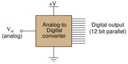
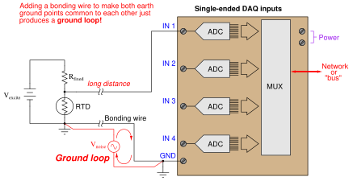
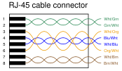

Subsections
The advent of digital electronic circuitry has brought a steady stream of technological progress to industrial instrumentation. From early applications of digital computing in the 1960's to the first distributed control systems (DCS) in the 1970's to the “smart” transmitter revolution of the 1980's, digital technology has expanded on the capabilities and information-sharing ability of measuring and control instruments. It is the purpose of this chapter to give a general overview of digital technology as it applies to data acquisition (measuring and recording process data) and digital communication, highlighting some of the more common standards used in industry. Subsequent chapters will be devoted to more in-depth discussions of specific digital instrumentation standards.
One of the greatest advantages of digital technology over analog is the ability to communicate vast amounts of data over a limited number of data channels. In the world of 4-20 mA signaling (or 3-15 PSI signaling, for that matter!) each pair of electrical wires (or pneumatic tube) could communicate only one variable. In the world of digital networks, one pair of wires can communicate a nearly limitless number of variables, the only limit being the speed of that data communication1.1.
This one-signal-per-channel limit of 4-20 mA analog signals represents a technological “bottleneck” restricting data transfer between instruments and control systems. While it certainly is possible to devote a dedicated wire pair to each and every variable in an instrument system, this is very expensive to do. It is particularly cumbersome for instruments generating multiple variables of measurement, such as Coriolis flowmeters which simultaneously measure process fluid mass flow rate, fluid density, and fluid temperature; or “smart” valve positioners which continuously measure the stem position, actuator air pressure(s), air supply pressure, and temperature of a control valve. The data-rich capabilities of digital field instruments demands a digital form of communication to overcome the “bottleneck” of analog 4-20 mA signals.
Rosemount's HART standard was an early attempt to provide the “best of both worlds” in industrial instrumentation. With HART digital signals superimposed on 4-20 mA analog signals, one could retain the simplicity, fast response, and reliability of analog signaling while enjoying the multi-variable communication benefits offered by digital signaling. However, wired-HART communication is rather slow by any standard, restricting its use to maintenance (range changes, diagnostic data polling) and process control for slow processes1.2 only.
There exist many different digital communication standards (generally called “fieldbuses”) designed to interconnect industrial instruments. An incomplete list is shown here:
- HART
- Modbus
- FOUNDATION Fieldbus
- Profibus PA
- Profibus DP
- Profibus FMS
- EtherNet/IP
- AS-I
- CANbus
- ControlNET
- DeviceNet
- LonWorks
- BACnet
The utility of digital “fieldbus” instruments becomes apparent through the host system these instruments are connected to (typically a Distributed Control System, or DCS). Fieldbus-aware host systems usually have means to provide instrument information (including diagnostics) in very easy-to-navigate formats.
For example, the following computer screenshot shows the field instrument devices connected to a small-scale DCS used in an educational lab. Each instrument appears as an icon, which may be explored further simply by pointing-and-clicking with the mouse1.3:
Another application of digital communication technology to industrial measurement and control is what is generally referred to as a SCADA (“Supervisory Control And Data Acquisition”) system. A SCADA system might be thought of as a distributed control system (DCS) spread over a geographically large area, such as across the span of a city or even across national borders. Typical applications of SCADA technology include:
- Electric power generation and distribution (power line, substation) systems
- Water and wastewater treatment and distribution (water line, pumping stations) systems
- Gas and oil exploration and distribution (pipeline) systems
- Large-scale agricultural (irrigation, harvesting) systems
- Storage tank monitoring systems
Process data in a SCADA system is sensed by various measurement devices (transmitters), converted to digital form by a device called an RTU (“Remote Terminal Unit”), and communicated to one or more MTUs (“Master Terminal Units”) at a central location where human operators may monitor the data and make command decisions.
If the flow of information is one-way (simplex, from measurement devices to human operators), the system is more properly referred to as a telemetry system rather than a SCADA system. “SCADA” implies two-way (duplex) information flow, where human operators not only monitor process data but also issue commands back to the remote terminal units to effect change.
The saying “necessity is the mother of invention” certainly holds true for the development of remote telemetry and SCADA systems. The need for remote monitoring and control of electric power distribution systems led to the development of “power line carrier” analog telemetry systems as far back in time as the 1940's. These systems superimposed1.4 high-frequency (50 kHz to 150 kHz) “carrier” signals on low-frequency (50 Hz and 60 Hz) power line conductors to communicate such basic information as human voice (like a telephone network, only dedicated for power system operators), power flow (wattmeter, MVAR meter) monitoring, and protective relay (automatic trip) controls. These SCADA systems were among the first to enjoy the benefits of digital technology in the 1960's. Large-scale electric power systems simply cannot be operated safely and effectively without remote data monitoring and control, and this operational necessity pushed technological development of telemetry and SCADA systems beyond their small-scale (industrial manufacturing) counterparts.
Whether it is a “smart” temperature transmitter, a panel-mounted process controller with Ethernet communication capability, a variable-speed electric motor drive with Modbus signaling, a large-scale DCS controlling an oil refinery, or a SCADA system monitoring an international power distribution system, digital measurement and communication is an essential part of modern measurement and control systems. This chapter focuses on some of the basic principles of digital data formatting and communication, referencing practical applications wherever possible.
Process measurements are often of an analog nature: the temperature of a furnace, the rate of fluid flow through a pipe, the pressure of a fluid, etc. These data are all analog quantities: infinitely variable, not discrete. Discrete process measurements such as the number of units passed by on a conveyor belt are relatively easy to sense and to log in digital form, but analog measurements require special circuitry and methods of numerical representation in order for control systems to manage them.
In order for any digital device to successfully interface with an analog signal, that signal must be digitized by means of an analog-to-digital converter or ADC. In general, ADC circuits receive analog voltage signals from sensors and output binary numbers (count values) proportional to those signals. A typical scale for an ADC is a count of zero (all binary bits = 0) with 0 millivolts input, and a full-scale count (all binary bits = 1) when the voltage input value is at its maximum (full-scale). The “full scale” value of an ADC circuit is often a modest DC voltage value of 5 or 10 volts. Details of ADC performance are discussed in a subsequent section of this chapter.
Many of the concerns discussed in this section are relevant to circuits converting digital values into analog signals as well. These digital-to-analog converters, or DACs, are generally used to produce the analog drive signals required of final control elements (e.g. the output of a digital PID controller driving a 4-20 mA analog signal to a control valve positioner).
An integer is any whole number or its negative counterpart (e.g. 2, 7, 241, 0, ,  ). All modern digital systems represent integer quantities using binary numeration, where integer numbers consists of strings of “bits,” each bit having two possible values: 0 or 1. Unlike the decimal numeration system most people are familiar with where the place-weight values are powers of ten, the place-weight values of binary numeration are powers of two. The following example shows how the integer number six hundred and three is represented in both decimal and binary formats:
). All modern digital systems represent integer quantities using binary numeration, where integer numbers consists of strings of “bits,” each bit having two possible values: 0 or 1. Unlike the decimal numeration system most people are familiar with where the place-weight values are powers of ten, the place-weight values of binary numeration are powers of two. The following example shows how the integer number six hundred and three is represented in both decimal and binary formats:
The largest integer value representable in any positive place-weighted format is the base raised to the power of the number of places, minus one. So, for a three-digit decimal number, the largest possible value is (1000  1 = 999). For a ten-bit binary number, the largest possible value is
(1024 1 = 1023).
1 = 999). For a ten-bit binary number, the largest possible value is
(1024 1 = 1023).
The beauty of binary representation is that the individual “bits” are easy to encode in physical form. “1” and “0” values may take the form of voltage levels (“high” or “low”) in an electronic circuit, magnetization states on a magnetic disk or magnetic tape, AC signal frequencies (“high” or “low”) transmitted on a two-conductor cable, pulses of light transmitted through a fiber optic cable, or any other medium capable of representing two different states. This makes binary a natural form of numerical representation for computers.
When representing negative integers, the convention for written numerals is to prepend a “negative” symbol to the left-hand side of the number. In digital machines, this may be emulated by including an extra “sign bit” having a value of either 0 or 1 indicating whether the number is positive or negative. A more common method for negative value representation in digital machines, however, is called two's complement notation.
Two's complement notation works by assigning the most significant place-weight a negative weight value. To use a ten-bit binary example showing the number negative three hundred and ninety six:
Using this system to represent integer values, the greatest positive number possible is when all bits are “1” with the exception of the most significant bit (MSB). In the case of this ten-bit field, this number would be 0111111111, equaling or 511. The greatest negative number possible is when the only “1” bit is the MSB. In the case of this ten-bit integer, this number would be 1000000000, equaling or . Thus, a ten-bit two's complement integer may represent values ranging from to +511, inclusive.
Whether binary numbers in a computer use the two's complement system of notation or not is often the choice of the human being programming the computer. For this reason, it is important to define whether a binary integer used within a computer system to represent data is signed or unsigned. If the integer in question is “signed,” it means the binary number is capable of representing both positive and negative integer values (usually via two's complement notation). If the integer in question is “unsigned,” it means the binary number is capable only of representing positive values.
For example, an “unsigned” 16-bit integer has a possible numerical value range of 0 to 65535. However, the same 16-bit field – if designated as “signed” using two's complement place-weighting – has a range of  to +32767.
to +32767.
Digital computers usually organize binary numbers as clusters of bits with a set number of bits. A cluster of eight bits is called a byte. The standard number of bits for most modern computers exceeds one byte, with 16, 32, or even 64 bits' length being common. Whatever the standard bit-length of a computer's binary number field may be, it is defined for that computer as a word. Thus, if a digital computer is built to process binary data in 32-bit clusters, one “word” of data within that computer will be 32 bits in length. A “double-word” value for that computer is one where the binary number consists of 64 bits.
Given the typically large bit-lengths of numbers in modern computers, it is conventional to express such quantities in “shorthand” form using hexadecimal numeration. The basic idea of hexadecimal is that every four bits (half of a byte, or one nybble) of a binary number are represented by a single hex character ranging in value from 0 through F (0,1,2,3,4,5,6,7,8,9,A,B,C,D,E,F). For example, the 16-bit binary number 1001001111011110 is equivalent to the four-digit hexadecimal number 93DE:
Quite obviously, the hexadecimal number 93DE is a lot easier for human beings to manage than the binary number 1001001111011110. Computer systems providing users with live “views” of numerical values often format those values using hexadecimal numeration, just to simplify the task of interpretation.
The main limitation of integer numbers is their inability to represent quantities between whole numbers such as fractions. For example, a 4-bit integer number may have one of sixteen possible values (zero through fifteen), but it can never represent two-and-a-half.
One solution to this limitation is to re-assign place-weight values to the bits of a binary number, giving some of those bits fractional weights. For example, here is a ten-bit binary number field with a “binary point” separating whole-weighted bits from fractional-weighted bits, representing the quantity 70.375:
This form of binary notation is referred to as fixed-point, because the “binary point” is fixed in its location. Like any integer variable, this 10-bit binary number consisting of seven whole-weighted bits and three fractional-weighted bits has a definite range of possible values: in this particular case, from 0 to 127.875.
A variation on this theme is to use an integer number whose decimal value is some power-of-ten-times larger than it needs to be, but regard it as though it had a decimal point between two of its digits. I will illustrate this concept by way of anecdote: I once worked on a digital travel-measurement system which displayed the distance a hydraulic ram's piston traveled using an LED numerical display. The sensor was a pulse encoder providing ten pulses per inch of travel, and this pulse signal directly fed a digital counter circuit which drove the LED display. When the hydraulic ram moved 19.3 inches, the LED display incremented by 193 counts. In order to make this LED display easy to read for human operators, I placed a dab of bright-red fingernail polish on the LED display to make it look as though a decimal point were permanently fixed between the least-significant digit and the next-significant digit. With the fingernail polish dot in place, 193 counts would read as 19.3. A text label saying “inches” was affixed to the right of the LED display, completing the indicator.
This solution is common to many industrial devices. Variable-frequency motor drives (VFDs), for example, often accept speed command values in integer format even though it is often necessary to specify drive frequency down to fractions of a Hertz. In such cases, the VFD manufacturer will program the VFD to imply a decimal point in the received integer number. For instance, if the fixed-point format is specified as XXX.X it means an integer value of 2057 sent to the VFD will be interpreted as 205.7 Hz; a value of 439 will be interpreted as 43.9 Hz; etc.
While fixing a “binary point” in the bit field escapes the limitation of whole-number resolution, a more sophisticated approach known as floating-point representation is a far more flexible way of representing fractional quantities in binary form. This is how most digital computers represent real-world analog quantities in digital form, and is the topic of the next subsection.
Integer numbers, while very commonly used in computers for representing data, are insufficient for tasks requiring the representation of fractional (non-whole) values. Most industrial data points fall into this category, whether it be a temperature measurement (e.g. 428.21  C), a gas concentration (e.g. 5.09 ppm of carbon monoxide), a control valve position (e.g. 27.58% open), or a motor speed (e.g. 1592.1 RPM). What we need is a form of binary representation capable of expressing fractional quantities.
C), a gas concentration (e.g. 5.09 ppm of carbon monoxide), a control valve position (e.g. 27.58% open), or a motor speed (e.g. 1592.1 RPM). What we need is a form of binary representation capable of expressing fractional quantities.
One way to do this is to use floating-point number format, where we represent binary quantities using a form resembling scientific notation. Some control systems refer to floating-point numbers as real numbers. Recall how we use scientific notation to represent decimal numbers:
The power-of-ten multiplier has the effect of “floating” the decimal point to any position we desire, so that the significant digits of the number may be expressed in “normalized” form (between 1 and 10). This is where the term “floating-point” comes from.
In binary floating-point notation, we use a designated set of bits to represent the significant bits of the number ( ), and a second designated set of bits to represent the power-of-two exponent ():
), and a second designated set of bits to represent the power-of-two exponent ():
Alert readers will note that the format shown here (
) provides no way to represent the number zero, since 1.0
( and ) is actually equal to one! Here, floating-point notation must provide special cases of representation. In the IEEE standard, the format shifts to
if ever all exponent bits are 0 (). In order to still be able to represent 1 (1.0
), the IEEE standard assumes the exponent value is biased with a negative number, so that an exponent bit field of 0 does not mean , but rather . This makes it possible to have an exponent value of 0 using non-zero bits. Similarly, an exponent field consisting entirely of 1 bits is used as special representation for infinity or for an error code called Not a Number (NaN), depending on the values of the bits. These special representations are important for handling the results of calculations such as division-by-zero and the square-roots or logarithms of negative numbers.
Given these special cases of representation required in floating-point notation, the task of doing calculations with floating-point numbers requires special processor circuitry designed to implement these rules. Inside a digital computer, this task is managed by a floating-point processor unit, usually a special section1.5 of the microprocessor. Some simpler microprocessors cannot support floating-point arithmetic, and thus some control system hardware (e.g. low-cost PLCs) must do all tasks using integer numbers (or fixed-point notation, if fractional quantities must be represented).
The ANSI/IEEE standard 754-1985 specifies multiple floating-point number formats, including one that is 32 bits in length (“single-precision”) and another that is 64 bits in length (“double-precision”). In the IEEE standard, one bit is reserved for the sign of the number (0 for positive and 1 for negative), a certain number of bits for the power-of-two exponent1.6, and the rest of the bits for the mantissa (the fractional portion of the normalized value). Both formats are shown here:
A third floating-point IEEE standard called extended uses 80 total bits: 1 for the sign, 15 for the exponent, and 64 for the mantissa.
Floating-point number representation greatly simplifies the task of digitally calculating real-world values. Integer numbers, by contrast, are rather clumsy when used to represent most real-world measurements or statistics. For this reason, floating-point numbers are sometimes referred to as real values in digital computer systems.
Specific details on IEEE floating-point representation and arithmetic rules extend beyond the scope of this book. For a good primer on the subject, I recommend Michael L. Overton's excellent paper “Floating Point Representation”.
To illustrate how different digital data formats are used in industrial systems, we shall explore an example of a human-machine interface (HMI) panel providing graphical view and control of data within a programmable logic controller (PLC). HMI panels are nothing more than special-purpose computers equipped with graphic display screens for displaying data to human operators and pushbuttons (sometimes touch-sensitive graphic screens) for receiving input from human operators.
The following illustration shows how an HMI may be used with a PLC to control electric power to a motor:
When the operator presses a button on the HMI display to tell the motor to start, the HMI panel sends digital data to the PLC instructing the program within the PLC to activate the motor. The PLC, in turn, receives this data from the HMI and determines whether or not1.7 to start the motor. If the motor starts, the PLC sends data back to the HMI confirming the motor's “run” status, which the HMI indicates to the operator in graphic form.
The configuration software used to set up communication between an HMI panel and the control device typically requires the human programmer (engineer or technician) to specify which data points inside the control device will be accessed by the HMI panel. This is specified in a list called the tag name database. A screen-shot of the tag name database for a particular HMI panel configured to communicate with a PLC using Modbus protocol appears here:
This database table shows the “tag name” assigned to each data point (for easy programming reference), the type of digital data format used, the memory address within the control device (the PLC), the network name of the PLC, and whether the data point is read-only (R), write-only (W), or read/write (R/W) from the perspective of the HMI panel.
Note how the first three tag names are all classified as discrete data. The word “discrete” here is synonymous with Boolean, because it represents single-bit data having only two possible states: on or off, 1 or 0. As the tag names imply, these particular data points are associated with simple on/off states: a pushbutton for starting a motor, another pushbutton for stopping a motor, and a bit representing the motor's “run” status. Once these tag names, data types, and device address values have been established, the programmer may then link the tags to graphic objects on the screen of the HMI panel. Perhaps a square box with the words “Motor start” may serve to activate the START_PUSHBUTTON bit and cause the PLC to energize the electric motor. An animated graphic image of a motor may be programmed to show rotation if the MOTOR_RUN bit is set, and show no motion if that same bit is cleared.
Four other data types appear in this tag name database, each one representing different forms of information:
- Unsigned 16-bit integer
- Unsigned 32-bit integer
- Floating-point 32-bit (also known as “Real” number format)
- ASCII string
Two “unsigned integer” data points represent motor run time and a “start counter” for keeping count of how many times the motor has been started. The timer is a 32-bit integer value, while the counter is a 16-bit integer value. Being unsigned integers (no two's complement notation), the numerical range of the timer is 0 to 4,294,967,295 (
) and the numerical range of the counter is 0 to 65535 (
 ). The large range afforded by the timer's 32-bit word length allows up to 136.2 years' worth of recorded continuous motor run time, assuming a timer resolution of one second per count.
). The large range afforded by the timer's 32-bit word length allows up to 136.2 years' worth of recorded continuous motor run time, assuming a timer resolution of one second per count.
Two of these data points use 32-bit floating-point format to represent analog motor data: motor temperature and motor speed. Given the units of measurement common to these types of variables (degrees Celsius or Fahrenheit, revolutions per minute), a resolution of  1 as given by an integer number would probably be insufficient for the task. Instead, the operator should be able to read fractions of a degree in temperature, and fractions of an RPM motor speed. This necessity to display numerical values with resolution less than 1 unit dictates the use of the floating-point data type1.8.
1 as given by an integer number would probably be insufficient for the task. Instead, the operator should be able to read fractions of a degree in temperature, and fractions of an RPM motor speed. This necessity to display numerical values with resolution less than 1 unit dictates the use of the floating-point data type1.8.
The last data type represented in this tag name database is an “ASCII string,” which means a series of bytes (8-bit groupings) representing text data, such as a message. In this particular case, the tag name itself betrays the purpose of the data: ERROR_MESSAGE. The PLC obviously has the ability to generate text messages and send them to the HMI panel to communicate specific errors to the operator.
Binary patterns are not just able to represent numerical values. Given a standardized code, they may represent other types of data as well, such as alphabetical characters. The ability to encode non-numerical data in digital form is what allows computers to manipulate and communicate text. In this subsection, we will explore some of the ways language characters are digitally encoded.
The representation of text by discrete (on/off) signals is rooted in ancient practice. The Greek historian Polybius described one such system in his Histories written in the second century BCE, used to communicate information about military maneuvers. In this passage Polybius describes the problem posed by primitive fire signals, and presents an improved method:
“It is evident to all that in every matter, and especially in warfare, the power of acting at the right time contributes very much to the success of enterprises, and fire signals are the most efficient of all the devices that aid us to do this. For they show what has recently occurred and what is still in the course of being done, and by means of them anyone who cares to do so even if he is at a distance of three, four, or even more days' journey can be informed. So that it is always surprising how help can be brought by means of fire messages when the situation requires it. Now in former times, as fire signals were simple beacons, they were for the most part of little use to those who used them. It was possible for those who had agreed to convey a signal that a fleet had arrived in Oreus, Peparethus, or Chalcis, but when it came to some of the citizens having changed sides or having been guilty of treachery or a massacre having taken place in town, or anything of the kind, things that often happen, but cannot all be foreseen – and it is chiefly unexpected occurrences which require instant consideration and help – all such matters defied communication by fire signal. It was quite impossible to have a preconceived code for things which there was no means of foretelling.
This is the vital matter; for how can anyone consider how to render assistance if he does not know how many of the enemy have arrived, or where? And how can anyone be of good cheer or the reverse, or in fact think of anything at all, if he does not understand how many ships or how much corn has arrived from the allies?
The most recent method, devised by Cleoxenus and Democleitus and perfected by myself, is quite definite and capable of dispatching with accuracy every kind of urgent messages, but in practice it requires care and exact attention. It is as follows: We take the alphabet and divide it into five parts, each consisting of five letters. Each of the two parties who signal to each other must get ready five tablets and write one division of the alphabet on each tablet. The dispatcher of the message will raise the first set of torches on the left side indicating which tablet is to be consulted; i.e., one torch if it is the first, two if it is the second, and so on. Next he will raise the second set on the right on the same principle to indicate what letter of the tablet the receiver should write down.”
We no longer use burning torches to convey information over long distances, but we do face a similar challenge: how might we convey messages of arbitrary length and complexity using a limited range of signals? Like Polybius, many modern solutions are based on encodings of an alphabet, which then may be used to communicate any message reducible to written language.
In the early days of communication, Morse code was used to represent letters of the alphabet, numerals (0 through 9), and some other characters in the form of “dot” and “dash” signals. Each “dot” or “dash” signal is one bit of data, equivalent to “1” and “0”. In the International Morse Code, no character requires more than five bits of data, and some (such as the common letters E and T) require only one bit.
A table showing how International Morse code represents all characters of the English alphabet and the numerals 0 through 9 appears here:
The variable bit-length of Morse code, though very efficient1.9 in terms of the total number of “dots” and “dashes” required to communicate text messages, was difficult to automate in the form of teletype machines. In answer to this technological problem, Emile Baudot invented a different code where each and every character was five bits in length. Although this gave only 32 characters, which is not enough to represent the 26-letter English alphabet, plus all ten numerals and punctuation symbols, Baudot successfully addressed this problem by designating two of the characters as “shift” characters: one called “letters” and the other called “figures.” The other 30 characters had dual (overloaded) meanings, depending on the last “shift” character transmitted1.10.
A much more modern attempt at encoding characters useful for text representation was EBCDIC, the “Extended Binary Coded Decimal Interchange Code” invented by IBM in 1962 for use with their line of large (“mainframe”) computers. In EBCDIC, each character was represented by a one-byte (eight bit) code, giving this code set 256 () unique characters. Not only did this provide enough unique characters to represent all the letters of the English alphabet (lower-case and capital letters separately!) and numerals 0 through 9, but it also provided a rich set of control characters such as “null,” “delete,” “carriage return,” “linefeed,” and others useful for controlling the action of electronic printers and other peripheral devices.
A number of EBCDIC codes were unused (or seldom used), though, which made it somewhat inefficient for large data transfers. An attempt to improve this state of affairs was ASCII, the “American Standard Code for Information Interchange” first developed in 1963 and then later revised in 1967, both by the American National Standards Institute (ANSI). ASCII is a seven-bit code, one bit shorter per character than EBCDIC, having only 128 unique combinations as opposed to EBCDIC's 256 unique combinations. The compromise made with ASCII versus EBCDIC was a smaller set of control characters.
IBM later created their own “extended” version of ASCII, which was eight bits per character. In this extended code set were included some non-English characters plus special graphic characters, many of which may be placed adjacently on a paper printout or on a computer console display to form larger graphic objects such as lines and boxes.
ASCII is by far the most popular digital code for representing English characters, even today. Nearly every digital transmission of English text in existence employs ASCII as the character encoding1.11. Nearly every text-based computer program's source code is also stored on media using ASCII encoding, where 7-bit codes represent alphanumeric characters comprising the program instructions.
The basic seven-bit ASCII code is shown in this table, with the three most significant bits in different columns and the four least significant bits in different rows. For example, the ASCII representation of the upper-case letter “F” is 1000110, the ASCII representation of the equal sign (=) is 0111101, and the ASCII representation of the lower-case letter “q” is 1110001.
ASCII code set
The aforementioned “control characters” occupy the “000” and “001” columns of the table. These characters, while not associated with a printed character on the page, nevertheless play roles the other “visible” characters cannot. The “LF” character (“line feed”), for example, tells the printer to go to the next line on the paper. The “CR” character (“carriage return”) tells the printing head to return to the left-hand side of the paper. The “ESC” character (“escape”) does not result in a printed character on paper, nor does it usually command a printing machine to do anything specific, but it is often used within software as a signal to jump up one level in a menu structure, or to switch modes.
There exist many written languages whose characters cannot and are not represented by either EBCDIC or ASCII. In in attempt to remedy this state of affairs, a new standardized code set is being developed called Unicode, with sixteen bits per character. This large bit field gives 65536 possible combinations, which should be enough to represent every unique character in every written language in the entire world. In deference to existing standards, Unicode encapsulates both ASCII and EBCDIC as sub-sets within its defined character set1.12.
And no, I am not going to include a table showing all the Unicode characters!
In order to provide an interface between the internal (digital) world of a computer and the external (analog) world of process measurement and control, there must be some form of conversion taking place between these two types of data. Devices that generate digital representations of analog measurements are called analog-to-digital converters, or ADCs. You will find ADC circuits in process transmitters, where some process variable measurement (e.g. pressure, temperature, flow, etc.) must be converted into digital form for a computer to interpret. Devices that generate an analog representation of digital quantities are called digital-to-analog converters, or DACs. These are found in the output channels of digital control systems, where the controller must drive some field device (e.g. I/P transducer) with a 4-20 mA analog electronic signal based on a digital calculation (e.g. PID).
Both ADCs and DACs relate analog voltage signals to multi-bit binary (digital) data. Perhaps the most obvious measure of ADC or DAC performance, then, is how many bits of output represent how many volts of analog signal. A simplified diagram of a 12-bit ADC is shown here for illustration:

Since the digital data “width” of this ADC is 12 bits, its digital output ranges from 000000000000 to 111111111111, constituting a 12-bit binary integer with a range extending from 000 hexadecimal to FFF hexadecimal, or 0 decimal to 4095 decimal. This integer number is called the count value of the ADC circuit. Although the ADC shown outputs its digital data in parallel form (with separate terminals for the 12 individual bits), many modern ADC chips are designed for serial data output, where a single terminal generates a sequential series of bits timed to the pulse of a clock signal.
Supposing this 12-bit ADC has an analog input voltage range of 0 to 10 volts, how do we relate any given digital number value to a voltage value, or vice-versa? The key here is to understand that the 12-bit resolution of this ADC means it has  , or 4096 possible count values. The 10 volt DC input range is therefore divided up into
, or 4095, discrete increments:
, or 4096 possible count values. The 10 volt DC input range is therefore divided up into
, or 4095, discrete increments:
Where,
 = Number of binary bits in the output “word”
= Number of binary bits in the output “word”
For our hypothetical 0-10 VDC, 12-bit converter, the analog resolution is 2.442 millivolts. Thus, for any analog signal between 0 mV and 2.442 mV, the ADC's output should be zero (binary 000000000000); for any analog signal between 2.442 mV and 4.884 mV, the ADC's output should be one (binary 000000000001); and so on.
As previously mentioned, the digital value output by an ADC is commonly referred to as a count1.13. The word “count” is used in this context as a unit of measurement. For instance, if we subjected our 12-bit ADC to a full-scale input signal of 10 VDC, we would expect to see a full-scale digital output (binary 111111111111) of 4095 “counts.” Since most ADC circuits are designed to be linear, the mathematical relationship between input voltage and digital output “counts” is a simple proportionality:
We may use this formula to generate a partial table of input and output values for our 0-10 VDC, 12-bit ADC:
In order to calculate a digital count value from a given input voltage, simply divide that voltage value by the full-scale voltage, then multiply by the full-scale count value and round down1.14 to the nearest whole number. For any given voltage value input to the ADC, there is (ideally) one corresponding output “count” value. The converse cannot be said, however: for any given output “count” value, there is actually a range of possible input voltages (the span of that range being the analog resolution of the ADC, in this case 2.442 mV).
To illustrate, let us take one of the table entries as an example: an analog input of 6.11 volts should yield a digital output of (precisely) 2502 counts. However, a digital output of 2502 counts could represent any analog input voltage ranging between 6.10989 volts and 6.11233 volts. This uncertainty is inherent to the process of “digitizing” an analog signal: by using a discrete quantity to represent something infinitely variable, some detail is inevitably lost. This uncertainty is referred to as quantization error: the (potential) error resulting from “quantizing” (digitizing) an inherently analog quantity into a discrete representation.
Quantization error may be reduced (but never eliminated) by using an ADC with greater resolution. A 14-bit ADC operating over the same 0-10 VDC analog input range would have approximately one-quarter the uncertainty of the 12-bit ADC (0.610 mV instead of 2.442 mV). A 16-bit ADC's uncertainty would only be (approximately) one-sixteenth that of the 12-bit ADC. The number of bits chosen for any particular ADC application is therefore a function of how precise the digitization must be.
In some data acquisition systems the digital “count” scale maps to a live-zero analog range. For example, the Siemens model 353 process controller represents process variable, setpoint, and output (“valve”) percentages on a displayed scale of % to 103.3% with a 12-bit ADC count. For this controller, a digital count of zero (000 hexadecimal) represents an analog signal displayed on the controller's digital readout of %, and a full-scale digital count value (FFF hexadecimal) represents a displayed value of 103.3%. We may show the relationship between these two scales in graphical form, like a number line:
At first, the task of translating any analog value into its corresponding digital count value for this scale may seem daunting, but it is really no different than translating an input value into its corresponding output value for any linear instrument. This is something every student of instrumentation learns to do when working with analog-signal instrumentation, where process measurements are represented by 4-20 mA current signals or 3-15 PSI pneumatic pressure signals. If you were given a temperature transmitter with an input range of to 450 degrees Celsius and an output range of 4 to 20 milliamps, and then asked to calculate the appropriate current value corresponding to 300 degrees in that range, the task would be simple. First, you could translate 300 degrees into a per-unit expression of range by subtracting the lower-range value (LRV) of and then dividing by the span (URV LRV):
After that, you would translate that per-unit figure into a current value:
This general procedure of converting an input value into a per-unit representation of range, then converting that per-unit quantity into an output value, is described in detail in section ![[*]](crossref.png) beginning on page . Other methods of performing the same translation between linear input and output ranges are explained in sections and (beginning on pages and , respectively).
beginning on page . Other methods of performing the same translation between linear input and output ranges are explained in sections and (beginning on pages and , respectively).
Converting a digital count value to its respective analog value (or vice-versa) follows the exact same procedure. All we need to do is identify the input and output ranges of the converter circuit, then apply the same formula. One of these ranges will be an analog voltage or current range, while the other will be a count range. If needed, the count value may be translated to or from hexadecimal or binary, because your manual calculations of course would need to be done in decimal format.
For example, suppose one of these Siemens controllers displayed a value of 26.7% on its front panel, and we wished to know what digital (count) value corresponded to this. First, we could translate the panel indication of 26.7% into a per-unit expression of range based on the scale being % to 103.3%:
Then, we may take this per-unit expression of 0.2814 and multiply it by the span of the known count range (4095 for a 12-bit converter) to arrive at 1152, or 480 hexadecimal (480h).
Similarly, if we knew the range of this 12-bit ADC in actual process engineering units, we could translate between ADC counts and the process value by the same method. Suppose we used one of these same controllers to display the temperature of a furnace, where the lower- and upper-range values were 900 deg F and 1850 deg F, respectively. It is important to realize that these lower- and upper-range values represent 0% and 100% of scale, and that the ADC is actually configured to cover a range from % to 103.3%. In other words, the ADC range “spills over” the specified range of 0 to 100% (900 to 1850 F) by 3.3% on both ends, equating to 31.35 F above and below the specified range limits. Thus, the 12-bit ADC's full-count range of 0 to 4095 (000 to FFF hex) actually covers a temperature range of 868.65 F to 1881.35 F:
Suppose we happened to know the ADC count inside this Siemens controller for a certain furnace temperature was A59 hexadecimal (A59h), equal to 2649 in decimal form:
To convert this count value into a temperature, first we convert the count value of 2649 into a per-unit value:
Next, we translate this per-unit value into a temperature based on the known LRV and URV range points:
The next major performance metric for analog signal digitization is how often the analog signal gets converted into digital form. Each time an ADC circuit “samples” its analog input signal, the resulting digital number is fixed until the next sample. This is analogous to monitoring a continuously moving object by taking a series of still-photographs. Any changes happening to the analog signal between sampling events are not detected by the converter, and therefore are not represented in the digital data coming from the converter.
It stands to reason, then, that the sampling rate of any ADC must be at least as often as significant changes are expected to take place in the analog measurement. According to the Nyquist Sampling Theorem, the absolute minimum sample rate necessary to capture an analog waveform is twice the waveform's fundamental frequency. More realistic is to have the ADC sample the waveform ten times or more per cycle.
In general electronics work, for example with the design of electronic test equipment such as digital multimeters (DMMs) and digital storage oscilloscopes (DSOs), sampling rates must be rather fast. Modern digital oscilloscopes may have sampling rates in the billions of samples per second, to allow for the successful digitization of radio-frequency analog signals.
Industrial process measurements are far more forgiving than measurements commonly performed on an electronic technician's workbench, thankfully. The temperature of a large furnace may be adequately sampled at a rate of only once per minute, if need be. Even “fast” feedback processes such as liquid flow and pressure control may be controlled with reasonable stability by digital systems sampling just a few times per second.
A sampling rate that is too slow (infrequent) may detrimentally affect a measurement or control system in more than one way. First, the time between samples is dead time to the system: time during which the digital system will be completely unresponsive to any changes in process measurement. Excessive dead time in an alarm system means an unnecessary time delay between the alarm event and the alarm signal. Excessive dead time in a feedback control loop leads to oscillation and instability. Another detrimental effect of low sampling rate is something called aliasing1.15: a condition where the digital system “thinks” the frequency of an analog signal is far lower than it actually is.
An example of signal aliasing is shown in the following illustration, where a sinusoidal signal (colored blue) is sampled at periods slightly slower than once per cycle (samples marked by red dots). The result (the red, dashed curve) is what appears to be a much lower-frequency signal as seen by the digital system, which only “sees” the values represented by the red dots1.16:
Aliasing can even occur when the sampling rate is slightly faster than the sinusoidal signal's period, as shown in this illustration:
As you can see from these illustrative examples, the troubling nature of aliasing is that it causes the ADC to report a completely incorrect, yet completely plausible signal. The only way to avoid aliasing is to ensure that the sampling rate is much faster than the signal period: a good rule here is to sample at least 10 times per period, for the highest signal frequency of interest.
If we cannot set the sampling rate of the ADC to be significantly faster than the highest signal frequency we might encounter, we may avoid aliasing by preventing those high signal frequencies from ever reaching the ADC. This may be done by placing an analog low-pass filter circuit before the ADC's input. Such a “front-end” circuit is called an anti-aliasing filter:

Aliasing may still occur within digital systems, though, if one portion of a system “samples” the digital output of another portion at too slow of a rate. An example of this might be the rate at which a digital control system (such as a DCS) polls a process variable value collected by a digital sensor network (such as a network of radio-linked process transmitters, or digital fieldbus transmitters). If the DCS polling rate is sufficiently slow compared to the frequency of the signal reported by the digital transmitters, aliasing may result. The best guard against such potential troubles is to synchronize the sampling rates throughout the system, or (alternatively) ensure data sources always output values at a significantly slower rate than any functions reading them. Remember that a practical (minimum) sample rate to signal period ratio is 10:1 to ensure good analog-to-digital conversion integrity.
Modern analog-to-digital converters are phenomenally accurate, dependable, repeatable, and surprisingly inexpensive as integrated circuits considering their capabilities. However, even the best ADC is useless in a real application unless the analog voltage signal input to it is properly conditioned, or “made ready” for the ADC to receive. We have already explored one form of signal conditioning for ADC circuits, and that is the anti-alias filter, designed to block any signals from reaching the ADC with frequencies higher than the ADC can faithfully sample. An even more fundamental signal-conditioning requirement, though, is to ensure the analog input signal voltage is a good match for the voltage range of the ADC.
Most analog signals take the form of a varying voltage, but not all voltages are equally referenced. Recall the fundamental principle in electricity that “voltage” or “potential” is a relative quantity: there is no such thing as a voltage existing at a single point. Voltage is something that exists between two points. In electronic circuits, most voltage signals are referenced to a common point called “ground.” However, in many industrial measurement applications, the voltage signal of interest may not have one of its poles connected to ground. A voltage source may be “floating,” as in the case of an ungrounded thermocouple junction. A voltage source may also be “elevated,” which means both of its connection points are at some substantial amount of voltage with reference to ground. Whether or not a voltage signal source is “referenced” to ground poses a challenge for accurate and safe signal measurement, and it is a subject fraught with much confusion. This section of the book will explore some of these principles and applications, showing how to properly connect data acquisition (DAQ) hardware to voltage signal sources so as to overcome these problems.
To illustrate the necessity of signal conditioning, and to introduce a critically important conditioning circuit called an “instrumentation amplifier,” let us examine a data acquisition application applied to a photovoltaic power system (solar electric panel) generating electricity from sunshine. Here, our goal is to use a pair of analog-to-digital converter circuits to monitor the solar panel's voltage as well as its output current to the DC load. Since ADC circuits typically require voltage signals rather than current, a precision shunt resistor is placed in series with the solar panel to produce a measurable voltage drop directly proportional to load current:
The question we face now is, “how do we connect each ADC to the photovoltaic power system?” Each ADC is designed to digitize a DC voltage signal with reference to its ground connection, 0 to 5 volts DC producing a full range of “count” values. Right away we see that the maximum output voltage of the photovoltaic panel (33 volts DC) significantly exceeds the maximum input range of each ADC (5 volts DC), while the voltage produced by the shunt resistor for measuring load current will be very small (0.54 volts DC) compared to the input range of each ADC. Excessive signal voltage is obviously a problem, while a small voltage range will not effectively utilize the available measurement span or signal resolution.
The first problem – how to measure panel voltage when it greatly exceeds the ADC's 5-volt maximum – may be easily solved by connecting one ADC to the panel through a precision voltage divider. In this particular case, a 10:1 divider circuit will do nicely:
With this 10:1 voltage divider circuit in place, the panel's 33 VDC maximum output will be seen as a 3.3 VDC maximum signal value at the ADC, which is both within its measurement range and yet spans a majority of the available range for good measurement resolution1.17. This simple voltage divider network thus conditions the solar panel's 33 volt (maximum) output to a range acceptable to the ADC. Without such a divider in place, the ADC would be over-ranged at the very least – but most likely destroyed – by the solar panel's relatively high voltage.
Please note how the ADC is really nothing but a voltmeter: sampling whatever voltage it senses between its terminal and its Ground terminal. If you wish, you may visualize the ADC as being a voltmeter with red and black test leads, the red test lead being and the black test lead being Ground.
Connecting the second ADC to the shunt resistor presents an even greater challenge, as we see in the following schematic. Treating the second ADC as a voltmeter (its “red” test lead being the terminal and its “black” test lead being the Ground terminal), it might seem appropriate to connect those two terminals directly across the shunt resistor. However, doing so will immediately result in the panel's full current output flowing through the Ground conductors:
Attempting to connect the ADC in parallel with the shunt resistor in order to measure its voltage drop results in unintentionally short-circuiting the solar panel through the ADC's ground connection, as shown by the “fault current” path depicted in the schematic! Not only will this circuit configuration fail to function properly, but it may even result in overheated conductors. A failure to recognize the measurement problems inherent to “elevated” voltage signals is no academic matter: a mistake like this could very well end in disaster, especially if the power source in question is much larger than a single solar panel!
One way to try eliminating the fault current path is to avoid connecting the ADC to the same signal ground point shared by the first ADC. We could power the second ADC using a battery, and simply let it “float” at an elevated potential (up to 33 volts) from ground:
While this “floating ADC” solution does avoid short-circuiting the solar panel, it does not completely eliminate the fundamental problem. When we connect the ADCs' digital output lines to a microprocessor so as to actually do something useful with the digitized signals, we face the problem of having the first ADC's digital lines referenced to ground, while the second ADC's digital lines are at an elevated potential from ground (up to 33 volts!). To a microprocessor expecting 5.0 volt TTL logic signals (0 volts = “low”, 5 volts = “high”) from each ADC, this makes the second ADC's digital output unreadable (33 volts = ???, 38 volts = ???). The microprocessor must share the same ground connection as each ADC, or else the ADCs' digital output will not be readable.
We refer to the added 33 volts as a common-mode voltage because that amount of voltage is common to both poles of the signal source (the shunt resistor terminals), and now is common to the digital output lines of the ADC as well. Most sensitive electronic circuits – microprocessors included – cannot effectively interpret signals having significant common-mode voltages. Somehow, we must find a way to eliminate this common-mode potential so that a microprocessor may sample both ADCs' digital outputs.
An elegant solution to this problem involves the use of a differential amplifier to sample the voltage drop of the shunt resistor, then translate that voltage drop into a ground-referenced voltage ready for input to the second ADC, sharing the same ground as the first ADC. So long as this differential amplifier can tolerate the 33 VDC “common mode” voltage presented by the shunt resistor's location on the ungrounded side of the solar panel, the shunt resistor's signal will be properly conditioned for the ADC:
The task of the differential amplifier is to take the difference in potential between its two input lines and repeat that voltage at its output terminal, with reference to ground: effectively “shifting” the common-mode voltage from 33 volts to 0 volts. Thus, the differential amplifier takes a “floating” voltage signal and converts it into a ground-referenced voltage signal.
The following schematic shows how the differential amplifier does this, assuming a condition of maximum solar panel voltage and current (33 volts at 5.4 amps), and equal-value resistors in the differential amplifier circuit:
All voltages in the above schematic may be derived from the signal source (shunt resistor) and the general rule that an operational amplifier does its best to maintain zero differential voltage between its input terminals, through the action of negative feedback. The lower voltage-divider network presents half of the 33 volt solar panel potential (with reference to ground) to the noninverting opamp terminal. The opamp does its best to match this potential at its inverting input terminal (i.e. trying to keep the voltage difference between those two inputs at zero). This in turn drops 15.96 volts across the upper-left resistor (the difference between the “downstream” shunt resistor terminal voltage of 32.46 volts and the 16.5 volts matched by the opamp, both with respect to ground). That 15.96 volt drop results in a current through both upper resistors, dropping the same amount of voltage across the upper-right resistor, resulting in an opamp output voltage that is equal to 0.54 volts with respect to ground: the same potential that exists across the shunt resistor terminals, just lacking the common-mode voltage.
Not only does a differential amplifier translate an “elevated” voltage signal into a ground-referenced signal the ADC can digitize, but it also has the ability to overcome another problem we haven't even discussed yet: amplifying the rather weak 0 to 0.54 volt shunt resistor potential into something larger to better match the ADC's 0 to 5 volt input range. Most of the ADC's 0 to 5 volt input range would be wasted digitizing a signal that never exceeds 0.54 volts, so amplification of this signal by some fixed gain would improve the resolution of this data channel.
Fortunately, it is a rather simple matter to equip our differential amplifier circuit with variable gain capability by adding two more operational amplifiers and three more resistors. The resulting configuration is called an instrumentation amplifier, so named because of its versatility in a wide variety of measurement and data acquisition applications:
A very convenient feature of the instrumentation amplifier is that its gain may be set by changing the value of a single resistor, . All other resistors in an instrumentation amplifier IC are laser-trimmed components on the same semiconductor substrate as the opamps, giving them extremely high accuracy and temperature stability. is typically an external resistor connected to the instrumentation amplifier IC chip by a pair of terminals.
As the formula shows us, the basic gain of an instrumentation amplifier may be adjusted from 1 ( open) to infinite ( shorted), inclusive. The input voltage range is limited only by the opamp power supplies. Thus, the instrumentation amplifier is a versatile signal-conditioning circuit for translating virtually any voltage signal into a ground-referenced, buffered, and amplified signal suitable for an analog-to-digital converter.
A typical DAQ (Data AcQuisition) module will have one instrumentation amplifier for every analog-to-digital converter circuit, allowing independent signal conditioning for each measurement “channel”:
The “MUX” module shown inside this data acquisition unit is a digital multiplexer, sequentially sampling the count values output by each ADC (one at a time) and transmitting those digital count values out to the network or “bus” cable to be read by some other digital device(s).
A final solution showing this DAQ module measuring solar panel voltage as well as current appears here:
Most analog signals in industry come in the form of voltages. Even the ubiquitous 4 to 20 milliamp DC analog signal standard is typically converted into a 1 to 5 volt DC voltage signal before entering an electronic recorder, indicator, or controller. Therefore, the most common form of data acquisition device for analog measurement is one that accepts a DC voltage input signal. However, voltage signals cannot all be treated the same, especially with regard to a very important concept called ground reference. This portion of the book is devoted to an exploration of that concept, and how we may measure different kinds of voltage signals with real data acquisition devices.
First, let's examine some examples of analog voltage signal sources. For consistency, we will focus on different circuits that all sense temperature and output proportional DC voltages. Our first example is a simple voltage-divider circuit using an RTD (Resistance Temperature Detector) as the primary sensing element. An RTD is a variable resistance with a positive temperature coefficient: increasing resistance as temperature increases. Connected as shown, it will generate a signal voltage roughly1.18 proportional to sensed temperature:
The power source for this circuit is commonly referred to as an “excitation” source, hence the label
. The voltage signal measurable across the RTD is what we might refer to as a ground-referenced voltage signal, because one pole of it is directly connected (common) to ground.
Our next example is a device called a thermocouple – a pair of dissimilar-metal wires joined together to form a junction. Thermocouple junctions produce small amounts of voltage directly proportional to temperature. As such, they are self-powered devices, needing no “excitation” power sources to operate:
If the thermocouple junction is insulated from earth ground, we refer to it as a floating voltage signal. The word “floating” in this context refers to a complete lack of electrical connection to earth ground.
Returning to the use of RTDs for measuring temperature, another circuit design is the so-called bridge configuration, where an RTD comprises one or more “active” legs of a dual voltage divider. The excitation voltage source connects across two opposite ends of the bridge (powering both voltage dividers), while the signal voltage is measured across the other two opposite ends of the bridge (from one divider mid-point to the other):
The purpose of a bridge circuit is to subtract the “live zero” voltage otherwise dropped by the RTD, which cannot produce a zero-ohm resistance at any temperature. This makes it possible to have a signal voltage range beginning at 0 volts, even though the RTD's resistance will always be non-zero. The price we pay for this elimination of signal offset is the elevation of the signal from ground potential.
If the fixed-value resistors on the left-hand side of this bridge circuit each have the same resistance, the “common-mode” voltage will be one-half the excitation voltage. This presents an interesting situation from the perspective of measuring
, as the common-mode voltage may greatly exceed the signal voltage. We are not particularly interested in measuring the common-mode voltage because it tells us nothing about the sensed temperature, yet this relatively large voltage is “elevating” our signal voltage from ground potential whether we like it or not, and any data acquisition hardware we connect to the bridge circuit must deal effectively with this common-mode voltage (i.e. not let it corrupt or otherwise influence the accuracy of the desired signal measurement).
Yet another type of analog voltage signal is one where the signal is “centered” around ground potential, as is the case with a grounded-tip thermocouple:
If the centering is perfectly symmetrical, the signal voltage will be evenly “split” about ground potential. The two poles of a 30 millivolt thermocouple signal, for example, will measure +15 mV and  mV from ground. This is electrically equivalent to the elevated voltage signal model except with a negative common-mode voltage equal to half the signal voltage:
mV from ground. This is electrically equivalent to the elevated voltage signal model except with a negative common-mode voltage equal to half the signal voltage:
The type of analog voltage signal posed by our measurement application with becomes relevant when we connect it to a data acquisition device. Floating, ground-referenced, and elevated voltage signal sources each pose their own unique challenges to measurement, and any engineer or technician tasked with accurately measuring these signal types must understand these challenges. Data acquisition devices come in more than one type as well, and must be matched to the type of voltage signal in order to achieve good results.
Let's begin with our ground-referenced signal source: the simple RTD/resistor voltage divider circuit. If the divider is located close to the data acquisition (DAQ) analog input device, a single wire will suffice for connecting the two:
Each analog-to-digital converter (ADC) inside the DAQ unit is built to digitize a voltage with reference to ground, which is exactly the type of signal generated by our simple RTD voltage divider circuit. This type of DAQ analog input is called single-ended, and it is generally the default configuration on inexpensive DAQ units.
We cannot simply connect a single-ended DAQ input to a ground-referenced signal source using a single wire, however, if the two are located far apart from each other:
The problem here is that “all grounds are not created equal” over significant distances. If the ground path is literally through the earth (soil), there will be a myriad of noise sources adding spurious voltage to the measured signal: lightning strikes, ground leakage currents from AC power devices, and other sources of “noise” potential will become a part of the signal loop. Even continuous-metal ground paths over long distances can incur voltage drops significant enough to corrupt precision signal measurements. The grounding conductors used in AC power systems, for example, while continuous (no interruptions) between all points of use in the power system still drop enough millivoltage to significantly compromise instrumentation signals.
In essence, what appears to be a ground-referenced voltage signal source is actually an elevated voltage signal source, with the common-mode voltage being “noise” present between the two different ground locations.
At first, it would seem that connecting the two grounds together with a dedicated length of wire would solve the differential ground problem. Unfortunately, it does not. The noise sources intercepted through the earth are often of significant power, which just means any conductor stretched between two different earth grounds may end up carrying substantial amounts of current, and subsequently dropping voltage along the way due to wire resistance (
).

This is called a ground loop, and it should be avoided in signal circuits at all cost! Not only may the ground currents still produce significant noise voltage in the measurement circuit, but the ground currents may even become strong enough to damage the bonding wire! Ground loops are often unintentionally formed when the shield conductor of a long signal cable is earth-grounded at both ends.
A reasonable question to ask at this point is, “What constitutes a long distance when connecting ground-referenced signal sources to DAQ modules?” A simple rule to follow is that one cannot rely on ground points to be electrically common to each other (at least not common enough for precise signal-measurement purposes) if those points lie outside the same metal enclosure. If the signal source and DAQ analog input physically dwell inside the same metal enclosure, you can probably rely on the ground points being truly common to each other. If not, you should use some other means of measuring the signal. When in doubt, a sure test is to actually measure the potential difference between the source and DAQ ground points to see if any exists, being sure to check for AC noise voltage as well as DC.
Here is an example of a single-ended DAQ module successfully measuring a voltage signal source located far away:
Since an ungrounded thermocouple has no connection whatsoever to any ground, there will be no ground loop when connected to a single-ended DAQ input. The same is true for battery-powered sensor circuits lacking connection to earth ground:
Single-ended analog DAQ inputs have trouble measuring elevated signal voltages regardless of distance. Here, we see an example where someone has tried to connect a single-ended DAQ input to a grounded-excitation RTD bridge, with common-mode voltage equal to one-half the excitation source voltage. The result is disastrous:
If you follow the bottom wire in this diagram carefully, you will see how it effectively jumpers past the lower-left resistor in conjunction with the two ground connections. Yet, eliminating the wire simply substitutes one problem for another: without the bottom wire in place, the voltage seen by input channel 1 on the DAQ will be
rather than
all by itself.
A clever way to solve the problem of measuring elevated signal sources is to use two analog DAQ channels: one to measure
and the other to measure
, and then digitally subtract one measurement from the other. Thus, two single-ended input channels may function as one differential input channel.
Here, we see an example of this measurement technique applied to the grounded-excitation RTD bridge:
The subtraction of the two channels' digitized values may take place in a controller separate from the DAQ module, or within the DAQ module if it is equipped with enough “intelligence” to perform the necessary calculations.
An added benefit of using this dual-channel method is that any noise voltage existing between the signal ground and the DAQ ground will be common to both channels, and thus should cancel when the two channels' signals are mathematically subtracted.
A more versatile hardware solution for measuring any form of voltage signal is a DAQ equipped with true differential input channels. Here, each ADC is equipped with its own instrumentation amplifier, measuring the difference in potential between two ungrounded input terminals:
In this example we see one DAQ module measuring four different voltage signal sources, with no interference from differential ground potentials or between the sources themselves. Each input channel of the ADC is electrically independent from the rest. The only limitation to this independence is a certain maximum common-mode voltage between the signal source and the DAQ's own power supply, determined by the design of the instrumentation amplifiers inside the DAQ module.
One important limitation of differential input channels, however, is that there must be some path for the instrumentation amplifiers' bias currents to the DAQ's power supply ground or else the channel will not function properly. This poses a problem where we intend to connect a differential analog input channel to a floating signal source like this:
One of the “simplifying assumptions” students learn about operational amplifier circuits is that the input terminals of an opamp draw negligible current. While this may be close enough to the truth when performing calculations on an opamp circuit, it is not absolutely true. All opamps exhibit some amount of bias current at their input terminals, small as these currents may be. Without a complete path to ground for these currents, the input transistor stage of the operational amplifier will not be properly biased, and the amplifier will fail to work as designed.
For this reason, we must connect high-value resistors (typically in the mega-ohm range so as not to load the signal voltage being measured) to each of the differential input terminals, and then to ground like this:
In summary, we may list some essential rules to follow when connecting analog DAQ inputs to voltage signal sources:
- Ground points in different locations may not actually be common (enough) to each other
- Never create ground loops through wiring (any conductor connected to ground at each end)
- Beware of common-mode (elevated) signal voltages
- Always ensure a path to power supply ground for amplifier bias currents
One of the great benefits of digital technology is the ability to communicate vast amounts of information over networks. This very textbook you are reading was transmitted in digital form over the electronic network we call the Internet: a feat nearly impossible with any sort of analog electronic technology. The main benefit of digital data communication in industrial control is simple: no longer must we dedicate a single pair of wires to each and every variable we wish to measure and control in a facility as is necessary with analog (4-20 mA) signaling. With digital signaling, a single pair of wires or coaxial cable is able to convey a theoretically unlimited number of data points.
This benefit comes at a price, though: in order to communicate multiple variables (data points) over a single channel (wire pair), we must transmit and receive those signals one at a time. This means a digital communications system will necessarily exhibit some degree of time delay in acquiring, transmitting, receiving, and interpreting a signal. Analog systems, by contrast, are virtually instantaneous1.19. Thus, we see a contrast between analog and digital communication pitting channel capacity against speed:
With modern electronic technology it is possible to build digital communication systems that are so fast, the time delays are negligible for most industrial processes, which renders the second comparison (instantaneous versus time-delayed) moot. If time is no longer an issue, the advantage that digital communication has over analog in terms of channel usage makes it the superior choice1.20.
Another important advantage of digital data communication for industrial processes is increased noise immunity. Analog data is continuous by nature: a signal of 11.035 milliamps has a different meaning than a signal of 11.036 milliamps, because any measurable increment in signal represents a corresponding increment in the physical variable represented by that signal. A voltage value in a 0-5 volt digital signaling system of 0.03 volts, however, means the exact same thing as a voltage value of 0.04 volts: either one is still interpreted as a “0” or “low” state. Any amount of electrical noise imposed on an analog signal corrupts that signal to some degree. A digital signal, however, may tolerate a substantial amount of electrical noise with no corruption whatsoever.
Not surprisingly, though, the noise immunity enjoyed by digital signals comes with a price: a sacrifice in resolution. Analog signals are able to represent the smallest imaginable changes because they are continuously variable. Digital signals are limited in resolution by the number of bits in each data “word.” Thus, we see another contrast between analog and digital data representation:
With modern digital electronic technology, however, the “limited resolution” problem is almost nonexistent. 16-bit converter chipsets are commonly available today for input/output (I/O) modules on digital systems, providing a resolution of (65536) counts, or 0.00153%, which is good enough for the vast majority of industrial measurement and control applications.
This section will focus on serial data transmission, as opposed to parallel. In order to transmit digital data in parallel form, the number of wires scales directly with the number of bits in each data “word.” For example, if a 16-bit ADC chip were to communicate its data to some other digital device using a parallel network, it would require a cable with 16 wires (plus a common “ground” wire) at minimum1.21. Since this approach undercuts the “fewer wires” advantage that digital communications theoretically enjoys over analog communication, parallel data transmission is rarely seen in industry except for within the internal construction of a digital device (e.g. a parallel data bus inside a personal computer, or inside a PLC or DCS rack).
In serial communications systems, digital data is sent over a wire pair (or fiber optic cable, or radio channel) one bit at a time. A 16-bit digital “word” (two bytes in length) then will require a succession of 16 bits transmitted one after the other in time. How we represent each bit as an electrical signal, how we arrange those bits in time to group them into meaningful “words,” and how multiple devices share access to a common communications channel, is our next subject of exploration: the technical details of serial data communication.
The task of encoding real-life data as a series of on-and-off electrical signals, and then sending those signals long distances over electrical cables (or optical fibers, or radio waves) requires mutually-agreed standards for the encoding, the “packaging” of those bits, the speed at which the bits are sent, methods for multiple devices to use a common channel, and a host of other concerns. This subsection will delineate the major points of compatibility necessary for digital devices to communicate serially. We begin with a brief exploration of some of the standards used in early telegraph systems.
An early form of digital communication was Morse Code, used to communicate alpha-numerical information as a series of “dots” and “dashes” over telegraph1.22 systems. Each letter in the alphabet, and each numerical digit (0 through 9) was represented in Morse Code by a specific series of “dot” and “dash” symbols, a “dot” being a short pulse and a “dash” being a longer pulse. A similar code system called the Continental Code was used for early radio (“radiotelegraph”) communications.
As primitive as these codes were, they encapsulated many of the basic principles we find in modern digital serial communication systems. First, a system of codes was necessary in order to represent English letters and numerals by electrical pulses. Next, there needed to be some way to delineate the beginning and end of each character.
For example, consider the Continental Code encoding for the word NOWHERE. By placing an extra space (a pause in time) between characters, it is easy to represent individual characters in the message:
If this space between characters were not present, it would be impossible to determine the message with certainty. By removing the spaces, we find multiple non-sensical interpretations are possible for the same string of “dots” and “dashes:”
For that matter, it is even possible to confuse the meaning of the text string “NOWHERE” when the individual characters are properly interpreted. Does the string of characters say “NOWHERE,” or does it say “NOW HERE”?
This simple example illustrates the need for delimiting in serial data communication. Some means must be employed to distinguish individual groups of bits (generally called frames or packets) from one another, lest their meanings be lost. In the days when human operators sent and interpreted Morse and Continental code messages, the standard delimiter was an extra time delay (pause) between characters, and between words. This is not much different from the use of whitespace to delineate words, sentences, and paragraphs typed on a page. Sentenceswouldcertainlybeconfusingtoreadifnotforspaces!
In later years, when teletype machines were designed to replaced skilled Morse operators, the concept of frame delineation had to be addressed more rigorously. These machines consisted of a typewriter-style keyboard which marked either paper strips or pages with dots corresponding to a 5-bit code called the Baudot code. The paper strip or sheets were then read electrically and converted into a serial stream of on-and-off pulses which were then transmitted along standard telegraph circuit lines. A matching teletype machine at the receiving end would then convert the signal stream into printed characters (a telegram). Not only could unskilled operators use teletype machines, but the data rate far exceeded what the best human Morse operators could achieve1.23. However, these machines required special “start” and “stop” signals to synchronize the communication of each character, not being able to reliably interpret pauses like human operators could.
Interestingly, modern asynchronous1.24 serial data communication relies on the same concept of “start” and “stop” bits to synchronize the transmission of data packets. Each new packet of serial data is preceded by some form of “start” signal, then the packet is sent, and followed up by some sort of “stop” signal. The receiving device(s) synchronize to the transmitter when the “start” signal is detected, and non-precision clocks keep the transmitting and receiving devices in step with each other over the short time duration of the data packet. So long as the transmitting and receiving clocks are close enough to the same frequency, and the data packet is short enough in its number of bits, the synchronization will be good enough for each and every bit of the message to be properly interpreted at the receiving end.
Telegraph systems were Boolean in nature: representing “dots” and “dashes” by one electrical state of the telegraph line, and pauses by another. When manually-actuated keyswitches were abandoned in favor of teletype machines, and Morse code abandoned in favor of the Baudot (5-bit) code for representing alphanumeric characters, the electrical nature of the telegraph (at least initially1.25) remained the same. The telegraph line would either be energized or not, corresponding to marks or spaces made on the teletype paper.
Many modern digital communication standards represent binary “1” and “0” values in exactly this way: a “1” is represented by a “mark” state and a “0” is represented by a “space” state. “Marks” and “spaces” in turn correspond to different voltage levels between the conductors of the network circuit. For example, the very common EIA/TIA-232 serial communications standard (once the most popular way of connecting peripheral devices to personal computers, formerly called RS-232) defines a “mark” (1) state as volts between the data wire and ground, and a “space” (0) state as +3 volts between the data wire and ground. This is referred to as Non-Return-to-Zero1.26 or NRZ encoding:
An easy way to remember the difference between a “mark” and a “space” in this scheme is to recall the operation of old telegraph printing units, specifically how they created marks and spaces on moving paper strip. When the printing unit was energized (i.e. the transmitting key was pressed, sending current through the solenoid coil of the printer, corresponding to a “1” state), the printer's iron armature would be pulled down to draw a mark on the paper strip. When de-energized (transmitting key released, stopping current in the telegraph line, corresponding to a “0” state), the printer's armature would spring-return up from the paper to leave a blank space.
This is not the only way to represent binary bits, though. An alternative method is to use an oscillating (square-wave) signal, counting up and down transitions (pulse edges) at specific times to represent 1 and 0 states. This is called Manchester encoding, and it is used in the 10 Mbps (10 million bits per second) version of Ethernet and in both the FOUNDATION Fieldbus “H1” and Profibus “PA” instrumentation network standards:
Note how each binary bit (0 or 1) is represented by the direction of the voltage signal's transition. A low-to-high transition represents a “1” state while a high-to-low transition represents a “0” state. Extra “reversal” transitions appear in the pulse stream only to set up the voltage level as needed for the next bit-representing transitions. The representation of bits by transitions rather than by static voltage levels guarantees the receiving device can naturally detect the clock frequency of the transmitted signal1.27. Manchester data is therefore referred to as self-clocking.
Interpreting a Manchester waveform is easier than it first appears. The key is identifying which transitions represent “clocked” bits and which transitions represent “reversals” prior to bits. If we identify the widest periods of the waveform, we know the transitions in these periods must represent real bits because there are no reversals. Another way to say this is the greatest time period found between successive transitions in a Manchester waveform is the clock period. Once we identify this clock period, we may step along the waveform at that same period width to distinguish clocked bits from reversals.
Yet another method for encoding binary 1 and 0 states is to use sine waves of different frequencies (“tone bursts”). This is referred to as Frequency Shift Keying, or FSK, and it is the method of encoding used in the HART “smart” instrument communications standard.
In the HART standard – based on the Bell 202 standard used in telephone data exchange – two complete cycles at 2200 Hz represents a “0” bit (space), while one complete cycle at 1200 Hz represents a “1” bit (mark). This standard was invented as a way to exchange digital data over telephone networks, which were built to communicate audio-frequency1.28 AC signals and thus could not reliably communicate the square-wave signals associated with direct digital data. By assigning digital values to different audio frequencies, serial data could be communicated over telephone channels as a series of sine-wave tones.
The same principle of FSK allows HART-compatible instruments to communicate digital data over cables simultaneously carrying DC current (4 to 20 mA) signals representing control system data. Since each bit of FSK-encoded data consists of complete AC cycles (one full positive swing for every full negative swing), the superposition of AC tones does not affect the time-averaged value of the DC milliamp signal.
Other methods exist as well for encoding digital data along network cables, but these three are the most popular in industrial networks.
In order to successfully communicate digital data along a network, there must not only be a standard agreed upon between transmitting and receiving devices for encoding bits (NRZ, Manchester, FSK, etc.), but there must also be a standard in place for the speed at which those bits will be sent. This is especially true for NRZ and FSK encoding, where the “clock” speed is not explicitly present in the signal1.29.
For example, consider the confusion that could arise interpreting a NRZ signal if the transmitting device sends data at half the speed assumed by the receiving device:
Thus, one of the essential parameters in a serial data communication system is the bit rate, measured in bits per second (bps). Some communications standards have fixed bit rates, such as FOUNDATION Fieldbus H1 and Profibus PA, both standardized at exactly 31.25 kbps. Some, such as Ethernet, have a few pre-defined speeds (10 Mbps, 100 Mbps, 1 Gbps) defined by the specific transmitting and receiving hardware used. Others, such as EIA/TIA-232 may be arbitrarily set by the user at speeds ranging from 300 bps to over 115 kbps.
An older term sometimes used synonymously with bit rate is baud rate, however “bits per second” and “baud” are actually different things. “Baud” refers to the number of voltage (or current) alternations per second of time, whereas “bits per second” refers to the actual number of binary data bits communicated per second of time. Baud is useful when determining whether or not the bandwidth (the maximum frequency capacity) of a communications channel is sufficient for a certain communications purpose. For a string of alternating bits (e.g. 010101010101) using NRZ encoding, the baud rate is equivalent1.30 to the bit rate: exactly one voltage transition for each bit. For a string of unchanging bits (e.g. 000000000000 or 111111111111) using NRZ encoding, the baud rate is far less than the bit rate. In systems using Manchester encoding, the worst-case1.31 baud rate will be exactly twice the bit rate, with two transitions (one up, one down) per bit. In some clever encoding schemes, it is possible to encode multiple bits per signal transition, such that the bit rate will actually be greater than the baud rate.
As mentioned earlier in this section, serial data is usually communicated asynchronously in industrial networks. This means the transmitting and receiving hardware need not be in perfect synchronization to reliably send and receive digital data. In order for this to work, data must be sent in “frames” or “packets” of fixed (maximum) length, each frame preceded by a special “start” signal and concluded with a special “stop” signal. As soon as the transmitting device issues the “start” signal, the receiving device synchronizes to that start time, and runs at the pre-determined clock speed to gather the successive bits of the message until the “stop” signal is received. So long as the internal clock circuits of the transmitting and receiving devices are running at approximately the same speed, the devices will be synchronized closely enough to exchange a short message without any bits being lost or corrupted. There is such a thing as a synchronous digital network, where all transmitting and receiving devices are locked into a common clock signal so they cannot stray out of step with each other. The obvious advantage of synchronous communication is that no time need be wasted on “start” and “stop” bits, since data transfer may proceed continuously rather than in packets. However, synchronous communication systems tend to be more complex due to the need to keep all devices in perfect synchronization, and thus we see synchronous systems used for long-distance, high-traffic digital networks such as those use for Internet “backbones” and not for short-distance industrial networks.
Like bit rate, the particular scheme of start and stop bits must also be agreed upon in order for two serial devices to communicate with each other. In some networks, this scheme is fixed and cannot be altered by the user. Ethernet is an example of this, where a sequence of 64 bits (an alternating string of “1” and “0” bits ending with a “1, 1”; this is the “preamble” and “start frame delimiter” or “SFD” bit groups) is used to mark the start of a frame and another group of bits specifies the length of the frame (letting the receiver know ahead of time when the frame will end). A graphic description of the IEEE 802.3 standard for Ethernet data frames is shown here, illustrating the lengths and functions of the bits comprising an Ethernet frame:
Other serial networks offer choices for the user to select regarding these parameters. One such example is EIA/TIA-232, where the user may specify not only the bit rate, but also how many bits will be used to mark the end of the data frame. It is imperative in such systems that all transmitting and receiving devices within a given network be configured exactly the same, so that they will all “agree” on how to send and receive data. A screenshot from a UNIX-based serial communication terminal program (called minicom1.32) shows these options:
In this particular screenshot, you can see the data rate options (extending from 300 bps all the way up to 230400 bps!), the number of data bits (from 5 to 8), and the number of stop bits (1 or 2), all configurable by the user. Of course, if this program were being used for communication of data between two personal computers, both of those computers would need these parameters set identically in order for the communication to take place. Otherwise, the two computers would not be in agreement on speed, number of data bits, and stop bits; their respective data frames simply would not match.
To give an example of an EIA/TIA-232 data frame might look like as a series of voltage states, consider this waveform communicating a string of eight bits (01011001), using NRZ encoding. Here, a single “start” marks the beginning of the data frame, while two successive “stop” bits end it. Also note how the bit sequence is transmitted “backwards,” with the least-significant bit (LSB) sent first and the most-significant bit (MSB) sent last1.33:
Interestingly, the “mark” state (corresponding to a binary bit value of “1”) is the default state of the communications channel when no data is being passed. The “start” bit is actually a space (0). This is the standard encoding scheme for EIA/TIA-232, EIA/TIA-485, and some other NRZ serial communication standards.
One of the options you probably noticed in the “minicom” terminal program screenshot was something called parity. This is a simple form of error-checking used in many serial communication standards. The basic principle is quite simple: an extra bit is added at the end of the data frame (between the data and stop bits) to force the total number of “1” states to be either odd or even. For example, in the data stream just shown (10011010), there is an even number of “1” bits. If the serial device sending this eight-bit data group were configured for “odd” parity, it would append an additional “1” to the end of that frame to make the total number of “1” bits odd rather than even. If the next data group were 11001110 instead (already having an odd number of “1” bits), the transmitting device would have to attach a “0” parity bit on to the data frame in order to maintain an odd count of “1” bits.
Meanwhile, the receiving device is programmed to count up all the “1” bits in each data frame (including the parity bit), and check to see that the total number is still odd (if the receiving device is configured for odd parity just as the transmitting device, which the two should always be in agreement). Unlike the transmitting device which is tasked with creating the parity bit state, the receiving device is tasked with reading all the data bits plus the parity bit to check if the count is still as it should be. If any one bit somehow gets corrupted during transmission, the received frame will not have the correct parity, and the receiving device will “know” something has gone wrong. Parity does not suggest which bit got corrupted, but it will indicate if there was a single-bit1.34 corruption of data, which is better than no form of error-checking at all.
The following example shows how parity-checking would work to detect a transmission error in a 7-bit data word. Suppose a digital device asynchronously transmits the character “T” using ASCII encoding (“T” = 1010100), with one start bit, one stop bit, and “odd” parity. Since the “start” bit is customarily a 0 state (space), the data transmitted in reverse order (LSB first, MSB last), the parity bit transmitted after the data's MSB, and the “stop” bit represented by a 1 state (mark), the entire frame will be the following sequence of bits: 0001010101. Viewed on an oscilloscope display where a negative voltage represents a “mark” and a positive voltage represents a “space,” the transmitted data frame will look like this:
Note how the parity bit in this particular frame has been generated by the transmitting device as a 0 state, because the parity type is set for “odd,” and the transmitting device realizes that the 7-bit data word already has an odd number of 1 bits in it and doesn't need another “1” for the parity bit. The pulse waveform you see above is how this data frame will be transmitted onto the network.
Now suppose this transmitted frame encounters a significant amount of electrical noise as it travels to the receiving device. If the frame reaches the receiver as shown in the next illustration, the receiving device will interpret the message incorrectly:
One of the bits has been corrupted by noise, such that the fifth transmitted data bit (which should be 1) is instead received as a 0. The receiving device, of course, has no knowledge of the noise present on the NRZ signal because all it “sees” is the “mark” or “space” states as interpreted by its input buffer circuitry. When the receiving device goes to count the number of 1 bits in the message (data plus parity bit, disregarding start and stop bits), however, it will count an even number of 1's instead of an odd number of 1's. Since the receiving device is also set for “odd” parity to match the transmitting device, it expects an odd number of 1's in the received message. Thus, it “knows” there is a problem somewhere in this transmission, because the received parity is not odd as it should be.
Parity-checking does not tell us which bit is corrupted, but it does indicate that something has gone wrong in the transmission. If the receiving device is programmed to take action on receipt of a non-matching parity, it may reply with a request for the transmitting device to re-send the data as many times as necessary until the parity is correct.
If we look at the “minicom” terminal screenshot again to analyze the parity options, we see there are several to choose from:
The five options for parity in this program include None, Even, Odd, Mark, and Space. “No” parity is self-explanatory: the transmitting device does not attach an extra bit for parity at all, and the receiving device does not bother to check for it. Since the inclusion of a parity bit does add to the bulk of a data frame, it has the unfortunate effect of slowing down communications (more bit “traffic” occupying the channel than would otherwise need to be), thus the option to waive parity altogether for a more compact (faster) data frame. “Even” and “Odd” parity options work as previously described, with the transmitting device adding a parity bit to each frame to bring the total “1” bit count either to an even number or to an odd number (depending on the user's configuration), and the receiving device checks for the same. “Mark” and “Space” are really of limited usefulness. In either of these two options, a parity bit is added, but the transmitting device does not bother to calculate the evenness or oddness of the data bits, rather simply making the parity bit always equal to 1 (“mark”) or 0 (“space”) as chosen by the user. The receiving device checks to see that the parity bit is always that value. These two options are of limited usefulness because the parity bit fails to reflect the status of the data being transmitted. The only corruption the receiving device can detect, therefore, is a corruption of the parity bit itself!
One will often find the communications parameters of a serial network such as this displayed in “shorthand” notation as seen at the top of the “minicom” terminal display: 38400 8N1. In this case, the terminal program is configured for a bit rate of 38400 bits per second, with a data field 8 bits long, no parity bit, and 1 stop bit. A serial device configured for a bit rate of 9600 bps, with a 7-bit data field, odd parity, and 2 stop bits would be represented as 9600 7O2.
Parity bits are not the only way to detect error, though. Some communication standards employ more sophisticated means. In the Ethernet (IEEE 802.3) standard, for example, each data frame is concluded with a frame check sequence, which is a collection of bits mathematically calculated by the transmitting device based on the content of the data. The algorithm is called a cyclic redundancy check, or CRC, and is similar to the concept of “checksum” used by computers to check the integrity of data stored in hard disks and other “permanent” media. Like a parity algorithm, the CRC algorithm runs through a mathematical process whereby all the bits in the data field are counted, and a number is generated to reflect the statuses of those bits. The receiving device takes the received data field and performs the exact same mathematical algorithm, generating its own CRC value. If any of the data's bits become corrupted during transmission, the two CRC values will not match, and the receiving device will know something has gone wrong.
Like parity, the CRC algorithm is not perfect. There exists a chance that just the right combination of errors may occur in transmission causing the CRC values at both ends to match even though the data is not identical, but this is highly unlikely (calculated to be one chance in ). It is certainly better than having no error detection ability at all.
If the communications software in the receiving device is configured to take action on a detection of error, it may return a “request for re-transmission” to the transmitting device, so the corrupted message may be re-sent. This is analogous to a human being hearing a garbled transmission in a telephone conversation, and subsequently requesting the other person repeat what they just said.
Another option often found in serial data communications settings is something called flow control, not to be confused with the actual control of fluid through a pipe. In the context of digital communications, “flow control” refers to the ability of a receiving device to request a reduction in speed or even a complete cessation of data transmission if the speed of the transmitted data is too fast for the receiving device to keep pace. An example common to personal computers is that of a mechanical printer: while the computer may be able to transmit data to be printed at a very rapid pace, the printer is limited by the speed of its printing mechanism. In order to make the printing process go more smoothly, printers are equipped with buffer memory to store portions of the print job received from the transmitting computer that have not had time to print yet. However, these buffers are of finite size, and may become overwhelmed on large print jobs. So, if and when a printer detects its buffer near full capacity, it may issue a command to the computer to freeze serial data transmission until the printer's buffer has had some time to empty. In other words, the printer can send a message to the computer saying “Stop!” when its buffer is full, then later send another message saying “Resume” when its buffer is empty enough to resume filling. Thus, the receiving device has control over the flow of data necessary to manage its buffer resources.
Flow control in serial networks may take place in either hardware mode or software mode. “Hardware” mode refers to the existence of additional connector pins and cable conductors specifically designated for such “halt” and “resume” signals. “Software” mode refers to data codes communicated over the regular network channel telling the transmitting device to halt and resume. Software flow control is sometimes referred to as XON/XOFF in honor of the names given to these codes1.35. Hardware flow control is sometimes referred to as RTS/CTS in honor of the labels given to the serial port pins conveying these signals.
The following screen shot shows options for flow control in the “minicom” terminal program:
Here, you can see “hardware” flow control enabled and “software” flow control disabled. The enabling of “hardware” flow control means the serial communications cable must be equipped with the necessary lines to convey these handshaking signals (when needed) between devices. Software flow control tends to be the more popular option, the advantage of this of course being fewer conductors necessary in the serial data cable. The disadvantage of using software flow control over hardware is a slight inefficiency in data throughput, since the XON and XOFF commands require time to be transmitted serially over the same network as the rest of the data.
When two or more communication devices exchange data, the directions of their communication may be classified into one of two categories: simplex or duplex. A “simplex” network is one-way communication only. A sensor outputting digital data to a remotely-located indicator over a digital network would be an example of simplex communication, where the flow of information goes from sensor to indicator, and never the other direction. A public-address (PA) system is an analog example of a simplex communication system, since audio information only goes in one direction (from the person with the microphone to the audience).
“Duplex” communication refers to two-way data exchange. Voice telephony is an analog example of two-way (duplex) communication, where either person at the end of the connection can hear the other person talking. Duplex communication may be further subdivided into half-duplex and full-duplex, referring to whether or not the two-way communication may be simultaneous. In a “full-duplex” system, both devices may transmit data to each other simultaneously because they have separate channels (separate wires, or optical fibers, or radio frequencies) for their respective transmissions. In a “half-duplex” system, only one device may transmit at any time because the devices must share a common channel. A telephone system is an example of a full-duplex system, although it may be rather difficult for the people to understand each other when they are speaking over one another. A push-to-talk radio system (“walkie-talkie”) is an example of a half-duplex system, where each person must take turns talking.
Most industrial data networks are half-duplex, if only for the reason that most networks consist of more than two devices on a network segment. When more than two devices share a network, there are not enough data channels to allow all of the devices to simultaneously transmit and listen to each other. Thus, virtually any network supporting more than two devices will be half-duplex at best, and may even be limited to simplex operation in some cases.
In half-duplex systems, there must be some way for the respective devices to “know” when they are allowed to transmit. If multiple devices sharing one communications channel attempt to transmit simultaneously, their messages will “collide” in such a way that no device on the network will be able to interpret either message. The problem is analogous to two people simultaneously pressing the “talk” buttons on their two-way radio units: neither of the talking people can hear each other, and anyone else on the same channel hears the garbled amalgam of those two peoples' superimposed transmissions. In order to avoid this scenario in a half-duplex network, there must be some strategy to coordinate transmissions so only one device “talks” at any given time. The problem of deciding “who” gets to “talk” at any given time is generally known as channel arbitration. Several strategies for addressing this problem have been developed in the data communications field, a few of which will be described in this subsection.
Our first method works on the principle of having only one device on the network (the “master”) with permission to arbitrarily transmit data. All other devices on the network are “slaves,” which may only respond in direct answer to a query from the master. If the network happens to be simplex in nature, slave devices don't even have the ability to transmit data – all they can do is “listen” and receive data from the one master device.
For example, in a half-duplex master-slave network, if one slave device has data that needs to be sent to another slave device, the first slave device must wait until it is prompted (“polled”) by the master device before it is allowed to transmit that data to the network. Once the data is transmitted, any and all slave devices may receive that transmission, since they all “listen” to the same communications channel.
An example of an industrial network using master-slave channel arbitration is HART multidrop, where multiple HART field instruments are parallel-connected on the same wire pair, and one device (usually a dedicated computer) serves as the master node, polling the field instruments one at a time for their data.
Another example of a master-slave industrial network is a Modbus network connecting a programmable logic controller (PLC) to multiple variable-frequency motor drives (VFDs). The master device (the PLC) initiates all communications, with the slave devices (the motor drives) at most replying to the PLC master (and in many cases not replying at all, but merely receiving data from the PLC in simplex mode).
Master-slave arbitration is simple and efficient, but suffers from one glaring weakness: if the master device happens to fail, all communication on the network halts. This means the ability of any device on the network to transmit information utterly depends on the proper function of one device, representing a high level of dependence on that one (master) device's function.
Some master-slave networks address this problem by pre-assigning special “back-up” status to one or more slave devices. In the event that the master device fails and stops transmitting for a certain amount of time, the back-up device becomes “deputized” to act as the new master, taking over the role of the old master device by ensuring all slave devices are polled on schedule.
Another method of arbitrating which device gets to transmit on a channel in a half-duplex network is the token-passing method. Here, a special data message called the “token” serves as temporary authorization for each device to transmit. Any device in possession of the token is allowed to act as a master device, transmitting at will. After a certain amount of time, that device must relinquish the token by transmitting the token message on the network, complete with the address of the next device. When that other device receives the token message, it switches into master mode and transmits at will. The strategy is not unlike a group of people situated at a table, where only one of them at a time holds some object universally agreed to grant speaking authority to the holder.
Token-passing ensures only one device is allowed to transmit at any given time, and it also solves the problem inherent to master-slave networks of what happens when the master device fails. If one of the devices on a token-passing network fails, its silence will be detected after the last token-holding device transmits the token message to the failed device. After some pre-arranged period of time, the last token-holding device may re-transmit the token message to the next device after the one that failed, re-establishing the pattern of token sharing and ensuring all devices get to “speak” their turn once more.
Examples of token-passing networks include the general-purpose Token Ring network standard (IEEE 802.5) and the defunct Token Bus (IEEE 802.4). Some proprietary industrial networks such as Honeywell's TDC 3000 network (called the Local Control Network, or LCN) utilize token-passing arbitration.
Token-passing networks require a substantially greater amount of “intelligence” built into each network device than master-slave requires. The benefits, though, are greater reliability and a high level of bandwidth utilization. That being said, token-passing networks may suffer unique disadvantages of their own. For example, there is the question of what to do if such a network becomes severed, so that the one network is now divided into two segments. At the time of the break, only one device will possess the token, which means only one of the segments will possess any token at all. If this state of affairs holds for some time, it will mean the devices lucky enough to be in the segment that still has the token will continue communicating with each other, passing the token to one another over time as if nothing was wrong. The isolated segment, however, lacking any token at all, will remain silent even though all its devices are still in working order and the network cable connecting them together is still functional. In a case like this, the token-passing concept fares no better than a master-slave network. However, what if the designers of the token-passing network decide to program the devices to automatically generate a new token in the event of prolonged network silence, anticipating such a failure? If the network becomes severed and broken into multiple segments, the isolated segments will now generate their own tokens and resume communication between their respective devices, which is certainly better than complete silence as before. The problem now is, what happens if a technician locates the break in the network cable and re-connects it? Now, there will be multiple tokens on one network, and confusion will reign!
Another example of a potential token-passing weakness is to consider what would happen to such a network if the device in possession of the token failed before it had an opportunity to relinquish the token to another device. Now, the entire network will be silent, because no device possesses the token! Of course, the network designers could anticipate such a scenario and pre-program the devices to generate a new token after some amount of silence is detected, but then this raises the possibility of the previously-mentioned problem when a network becomes severed and multiple tokens arise in an effort to maintain communication in those isolated network segments, then at some later time the network is re-connected and now multiple tokens create data collision problems.
A method of channel arbitration similar to token-passing is TDMA, or “Time Division Multiple Access.” Here, each device is assigned an absolute “time slot” in a repeating schedule when it alone is allowed to transmit. With token-passing, permission to transmit is granted to each device by the previous device as it relinquishes the token. With TDMA, permission to transmit is granted by an appointment on a fixed time schedule. TDMA is less time-efficient than token-passing because devices with no data to transmit still occupy the same amount of time in the schedule as when they have data to transmit. However, TDMA has the potential to be more tolerant of device failure and network segmentation than token-passing because neither the failure of a device nor segmentation of the network can prevent remaining devices from communicating with each other. If a device fails (becomes “silent”) in a TDMA network, that time slot simply goes unused while all other communication continues unabated. If the network becomes severed, each set of devices in the two segments will still follow their pre-programmed time schedule and therefore will still be able to communicate with each other.
Examples of TDMA networks include the WirelessHART and ISA100.11a radio instrumentation standards. The GSM cell phone network standard also includes TDMA as part of a larger strategy to manage access between multiple cell phones and cell towers. TDMA arbitration works very well for wireless (radio) networks where the communication channel is inherently unreliable due to physical obstacles. If a device on a TDMA wireless network falls out of range or becomes blocked, the rest of the network carries on without missing a step.
Practical TDMA networks are not quite as fault tolerant as the idealized vision of TDMA previously described. Real TDMA networks do depend on some “master” device to assign new time slots and also to maintain synchronization of all device clocks so that they do not “lose their place” in the schedule. If this master device fails, the TDMA network will lose the ability to accept new devices and will (eventually) lose synchronization.
In light of this fact, it might appear at first that TDMA is no better than master-slave arbitration, since both ultimately depend on one master device to manage communication between all other devices. However, TDMA does offer one significant benefit over master-slave, and that is more efficient use of time. In a master-slave network, the master must poll each and every device on the network to check if it has data to transmit. This polling requires additional network time beyond that required by the “slave” devices to report their data. In a TDMA network, the master device need only occupy time transmitting to the network when updating time-slot assignments and when broadcasting time synchronization messages. You can think of TDMA as being a “smarter” version of master-slave arbitration, where the devices need only be told once when they may transmit, rather than having to be told every single time when they may transmit.
A completely different method of channel arbitration is where any and all devices have permission to transmit when the network is silent. This is generally called CSMA, or “Carrier Sense Multiple Access.” There are no dedicated master and slave devices with CSMA, nor are devices permitted to transmit in a pre-determined order as with token-passing or in a pre-determined schedule as with TDMA. Any device on a CSMA network may “talk” in any order and at any time whenever the network is free. This is analogous to an informal conversation between peers, where anyone is permitted to break the silence.
Of course, such an egalitarian form of channel arbitration invites instances where two or more devices begin communicating simultaneously. This is called a collision, and must be addressed in some manner in order for any CSMA network to be practical.
Multiple methods exist to overcome this problem. Perhaps the most popular in terms of number of installed networks is CSMA/CD (“Carrier Sense Multiple Access with Collision Detection”), the strategy used in Ethernet. With CSMA/CD, all devices are not only able to sense an idle channel, but are also able to sense when they have “collided” with another transmitting device. In the event of a collision, the colliding devices both cease transmission, and set random time-delays to wait before re-transmission. The individual time delays are randomized to decrease the probability that a re-collision between the same devices will occur after the wait. This strategy is analogous to several peers in one group holding a conversation, where all people involved are equally free to begin speaking, and equally deferential to their peers if ever two or more accidently begin speaking at the same time. Occasional collisions are normal in a CSMA/CD network, and should not be taken as an indication of trouble unless their frequency becomes severe.
A different method of addressing collisions is to pre-assign to each device on the network a priority number, which determines the order of re-transmission following a collision. This is called CSMA/BA, or “Carrier Sense Multiple Access with Bitwise Arbitration,” and it is analogous to several people of different social levels in one group holding a conversation. All are free to speak when the room is silent, but if two or more people accidently begin speaking at the same time, the person of highest “rank” is allowed to continue while the “lower-rank” person(s) must wait. This is the strategy used in DeviceNet, an industrial network based on CAN technology, one of the more popular data networks used in automotive engine control systems.
Some CSMA networks lack the luxury of collision detection, and must therefore strive to prevent collisions rather than gracefully recover from them. Wireless digital networks are an example where collision detection is not an option, since a wireless (radio) device having a single antenna and a single channel cannot “hear” any other devices' transmissions while it is transmitting, and therefore cannot detect a collision if one were to occur. A way to avoid collisions for such devices is to pre-assign each device on the network with a priority number, which determines how long each device is forced to wait after detecting a “quiet” network before it is allowed to transmit a new message. So long as no two devices on the network have the same “wait” time, there will be no collisions. This strategy is called CSMA/CA, or “Carrier Sense Multiple Access with Collision Avoidance,” and is the technique used for WLAN networks (the IEEE 802.11 specification). A consequence of collision avoidance, though, is unequal access to the network. Those devices with higher-priority (shorter wait times) will always have an advantage in transmitting their data over devices of lower priority. The degree of disparity in network access grows as more devices occupy the network. CSMA/CA is analogous to a group of shy people talking, each person afraid to speak at the same time as another, and so each person waits a different amount of time following the conclusion of the last utterance before daring to speak. This sort of ultra-polite behavior may ensure no one accidently interrupts another, but it also means the shiest person will hardly ever get a chance to speak.
One characteristic distinguishing all CSMA networks from master-slave, token-passing, and TDMA networks is a lack of determinism. “Determinism” is the ability to guarantee communication of a message within a specified maximum time. A master-slave or TDMA network following a repeating schedule guarantees that the time will not take longer than the period of the cycle. A token-passing network following a definite order guarantees that the time will not take longer than the number of devices times the maximum time each device may hold the token. A CSMA network, at least hypothetically, can prevent any device from transmitting its message if it keeps being blocked by other devices transmitting (the one highest-priority device in a CSMA/BA or CSMA/CA network being an exception of course). Determinism is important in industrial control systems where communication delays may adversely affect the stability of a control loop, and it is especially important in safety control systems where fast action is needed to avert catastrophe.
A potential problem in any digital network, but particularly networks employing CSMA arbitration, is something known as jabbering. If a network device happens to fail in such a way that it ceaselessly transmits a signal on the network, none of the other CSMA devices will ever be allowed to transmit because they continuously detect a “carrier” signal from the jabbering device1.36. Some Ethernet components sport jabber latch protection circuits designed to detect jabber and automatically cut off the offending device from the network, or employ “store-and-forward” buffering which is able to block jabbered data frames.
Digital data communication may be described in many ways. For example, a connection formed between two computers to exchange a text document is a multi-layered activity, involving many steps to convert human language into electrical impulses for transmission, then re-convert those electrical impulses into human language again at the receiving end. Not surprisingly, there usually exist many different ways to perform this same task: different types of networks, different encodings, different communications and presentation software, etc.
To illustrate by analogy, think of all the actions and components necessary to transport items using an automobile. In order to move furniture from an apartment to a house, for example, you would require the following:
- An appropriate vehicle
- Addresses or directions for both locations
- A driver's license and knowledge of driving rules
- Fuel for the vehicle
- Knowledge of how to safely stack furniture for transport
- Knowledge of how the furniture is to be placed in the house
These details may seem trivial to mention, as human beings familiar with the common task of moving personal belongings from one location to another, but imagine having to describe every single action and component to someone from a primitive culture ignorant of vehicles, addresses, maps, driver's licenses, fuel, etc. One way to help describe all this complexity would be to assign different people to different layers of detail. For example, an automotive engineer could discuss the details of how engines burn fuel to do mechanical work (propelling the vehicle) while a furniture loader could describe how furniture is to be loaded and taken off the vehicle. A driving instructor could then explain all the procedures of safely driving the vehicle, while a city planner could explain the organization of streets and addresses in relation to a city map. Finally, an interior decorator could wax eloquent on the proper placement of furniture in the house. Each person would be describing a different aspect of the furniture move, each one of those aspects being important to the overall goal of moving furniture from one location to another.
Moreover, for each one of the aspects described by a specialist, there may exist several different alternatives. For example, there are many different models and designs of vehicle one might use for the job, and there may be different driving rules depending on where the two locations are for the move. Addresses and directions will certainly vary from city to city, and even within one city there will be alternative routes between the two locations. Finally, there is virtually no end to arrangements for furniture at the destination house, each one with its own functional and esthetic merits.
By the same token, the task of transporting digital data may be divided into similar categories. In order to move and process data from one computer to another, you need the following:
- An appropriate cable (or radio link) connecting the two computers
- Standardized electrical signals to represent bit states
- Addresses for each computer on the network
- Algorithms specifying how each computer takes turns “talking” on the common network
- Algorithms specifying how to organize packets of data to be sent and received serially
- Software to format the data on the transmitting end and interpret the data on the receiving end
Each of these aspects is important to the overall goal of creating, moving, and interpreting digital data between two or more computers, and there are many alternative methods (standards) for each aspect. We may represent 0 and 1 bits using NRZ (Non-Return to Zero) encoding, Manchester encoding, FSK modulation, etc.; the signals may be electrical or they may be optical or they may even be radio waves; the options for electrical cables and connector types are many. Bits may be framed differently as they are packaged for transmission, and arbitration between devices on the network managed in a variety of different ways. How we address multiple devices on a network so messages get routed to their proper destinations is important as well.
A scheme originally intended as a formal standard, but now widely regarded as a general model to describe the portions of other standards, helps us clarify the complexity of digital communications by dividing communication functions into seven1.37 distinct “layers.” Developed by the ISO (International Organization for Standards)1.38 in 1983, the OSI Reference Model divides communication functions into the following categories, shown in this table with examples:
The vast majority of digital networking standards in existence address mere portions of the 7-layer model. Any one of the various Ethernet standards, for example, applies to layers 1 and 2, but none of the higher-level layers. In other words, Ethernet is a means of encoding digital information in electronic form and packaging that data in a standard format understandable to other Ethernet devices, but it provides no functionality beyond that. Ethernet does not specify how data will be routed over large-area networks, how to manage data-exchange sessions between computers (opening connections, initiating data transfer, closing connections), or how to format the data to represent real-world variables and media. Common industrial network standards such as EIA/TIA-232 and EIA/TIA-485 don't even go that far, being limited mostly to layer 1 concerns (signal voltage levels, wiring, and in some cases types of electrical connectors). For example, EIA/TIA-485 does not specify how to address multiple devices connected to a common electrical network – all it does is specify what voltage levels represent “0” and “1” bits.
By contrast, some other industrial networking standards specify nothing about lower-level layers, instead focusing on high-level concerns. Modbus, for example, is concerned only with layer 7, and not with any of the lower-level layers1.39. This means if two or more industrial devices on a network (such as programmable logic controllers, or PLCs) use “Modbus” to communicate with each other, it refers only to the high-level programming codes designed to poll and interpret data within those devices. The actual cable connections, electrical signals, and communication techniques used in that “Modbus” network may vary widely. Anything from EIA/TIA-232 to Ethernet to a wireless network such as WLAN may be used to actually communicate the high-level Modbus instructions between PLCs.
Due to the fact that most industrial instrumentation networks span limited physical distances and require low latency (short time delays) in order to exchange process-critical data between devices, the most common layers of the OSI model seen in industrial networks are layers 1, 2, and 7. The middle layers become important when data leaves the plant site and must be routed along major communications networks such as the Internet. Inside an industrial facility, however, the networks must merely encode the data in some physical media (layer 1), package and address the data so it makes it to the appropriate device(s) (layer 2), and give that data contextual meaning (layer 7).
The following sections explore some common networking standards used for industrial instrumentation systems. The OSI Reference Model will be mentioned where appropriate.
Some of the simplest types of digital communication networks found in industry are defined by the EIA (Electronic Industry Alliance) and TIA (Telecommunications Industry Alliance) groups, under the numerical labels 232, 422, and 485. This section discusses these three network types.
The EIA/TIA-232C standard, formerly1.40 known as RS-232, is a standard defining details found at layer 1 of the OSI Reference Model (voltage signaling, connector types) and some details found at layer 2 of the OSI model (asynchronous transfer, “flow control” or “handshaking” signals between transmitting and receiving devices). In the early days of personal computers, almost every PC had either a 9-pin or a 25-pin connector (and sometimes multiple of each!) dedicated to this form of digital communication. For a while, it was the way peripheral devices such as keyboards, printers, modems, and mice connected to personal computers. USB (Universal Serial Bus) has now all but replaced EIA/TIA-232 for personal computers, but it still lives on in the world of industrial devices.
EIA/TIA-232 networks are point-to-point, intended to connect only two devices1.41. The signaling is single-ended (also known as unbalanced), which means the respective voltage pulses are referenced to a common “ground” conductor, a single conductor used to transfer data in each direction:
EIA/TIA-232 specifies positive and negative voltages (with respect to the common ground conductor) for its NRZ signaling: any signal more negative than volts detected at the receiver is considered a “mark” (1) and any signal more positive than +3 volts detected at the receiver is considered a “space” (0). EIA/TIA-232 transmitters are supposed to generate and +5 volt signals (minimum amplitude) to ensure at least 2 volts of noise margin between transmitter and receiver. The voltage limits and NRZ encoding of EIA/TIA-232 comprise the OSI layer 1 elements of the standard.
Cable connectors are also specified in the EIA/TIA-232 standard, the most common being the DE-91.42 (nine-pin) connector. The “pinout” of a DE-9 connector for any DTE (Data Terminal Equipment) device at the end of an EIA/TIA-232 cable is shown here:
Those terminals highlighted in bold font represent those connections absolutely essential for any EIA/TIA-232 link to function. The other terminals carry optional “handshaking” (“flow control”) signals1.43 specified for the purpose of coordinating data transactions (these are the OSI layer 2 elements of the EIA/TIA-232 standard).
For DCE (Data Communications Equipment1.44) devices such as modems, which extend the EIA/TIA-232 signal path onward to other devices, the assignments of transmitting and receiving pins are swapped. For example, pin 2 is the Transmitted Data (TD) output while pin 3 is the Received Data (RD) input on a DCE device. This allows straight pin-to-pin cable connections between the DTE and DCE devices, so the transmit pin of the DTE device connects to the receive pin of the DCE, and vice-versa.
The following diagram shows the minimum cable requirements for an EIA/TIA-232 serial communication link consisting of a pair of DTEs connecting through a pair of DCEs. This minimal point-to-point network assumes the devices are configured for either software flow control (i.e. digital codes send over the TD/RD lines requesting the transmitting device to halt and resume) or no flow control at all:
In order to utilize hardware flow control, the EIA/TIA-232 cable(s) must include two additional conductors connecting the RTS and CTS pins between devices to enable them to signal each other with voltage-level states declaring when they are ready to receive more data:
Improper flow control configuration is a common commissioning problem in new serial networks. If the devices are configured for hardware handshaking (i.e. necessitating RTS and CTS lines in the connecting cables) or those devices simply default to hardware handshaking as new, but cables lacking RTS-to-CTS lines are used between these devices, the devices will never communicate because their respective (floating) CTS inputs will remain in the idle state and therefore the devices “think” they do not have permission to send data. Hardware flow control necessitates serial cables with at least five conductors, while software flow control needs only three (TD, RD, and Ground).
If one desires to directly connect two DTE devices together using EIA/TIA-232, a special cable called a null modem must be used, which swaps the connections between pins 2 and 3 of each device. A “null modem” connection is necessary for the transmit pin of each DTE device to connect to the receive pin of the other DTE device:
The concept of a “null modem” is not unique to EIA/TIA-232 circuits1.45. Any communications standard where the devices have separate “transmit” and “receive” channels will require a “null modem” connection with transmit and receive channels swapped to be able to communicate directly without the benefit of interconnecting DCE devices. Four-wire EIA/TIA-485 and Ethernet over twisted-pair wiring are two other examples of digital communication standards where a “null” style cable is required for two DTE devices to directly connect.
EIA/TIA-232 networks may be simple, but they tend to be rather limited both in data bit rate and distance, those two parameters being inversely related. References to the EIA/TIA-232 standard repeatedly cite a maximum data rate of 19.2 kbps at 50 feet cable rate. Experimental tests1.46 suggest greater rate/distance combinations may be possible in optimum conditions (low cable capacitance, minimum noise, good grounding). Since EIA/TIA-232 was developed to connect peripheral devices to computers (typically within the physical span of one room), and at modest speeds, neither of these limitations were significant to its intended application.
The next two network standards1.47 are less comprehensive than EIA/TIA-232, specifying only the electrical characteristics of signaling without any regard for connector types or any layer 2 (handshaking) considerations. Within these domains, the 422 and 485 standards differ significantly from 232, their designs intended to optimize both maximum cable length and maximum data rate.
To begin with, the electrical signaling used for both EIA/TIA-422 and EIA/TIA-485 is differential rather than single-ended (balanced rather than unbalanced). This means a dedicated pair of wires is used for each communications channel rather than a single wire whose voltage is referenced to a common ground point as is the case with EIA/TIA-232:
Using dedicated wire pairs instead of single conductors sharing a common ground means that EIA/TIA-422 and EIA/TIA-485 networks enjoy much greater immunity to induced noise than EIA/TIA-232. Noise induced via electrostatic coupling along the length of a network cable tends to be fairly equal (i.e. common-mode) on all non-grounded conductors of that cable, but since the receivers in EIA/TIA-422 and EIA/TIA-485 networks response only to differential voltages (not common-mode voltages), induced noise is ignored.
The advantage differential signaling enjoys over single-ended signaling may be understood by graphical comparison. The first illustration shows how electrical noise imposed on the ungrounded conductor of a simplex communications cable becomes superimposed on the digital data signal, detected at the receiving end. Noise is modeled here as a voltage source in series along the ungrounded conductor, near the receiving end. In reality, it is more likely to be distributed along the bulk of the cable length:
If the superimposed noise voltage detected at the receiver has sufficient peak-to-peak amplitude to push the signal voltage above or below critical threshold levels, the receiver will interpret this as a change of digital state and cause corruptions in the data stream.
By contrast, any noise superimposed on ungrounded conductors in a differential signaling circuit cancel at the receiver, because the close proximity of those two conductors ensures any induced noise will be the same. Since the receiver responds only to differential voltage between its two inputs, this common-mode noise cancels, revealing a “clean” data signal at the end:
Both EIA/TIA-422 and EIA/TIA-485 systems use differential signaling, allowing them to operate over much longer cable lengths at much greater cable speeds than EIA/TIA-232 which is single-ended. Other high-speed network standards including Ethernet and USB (Universal Serial Bus) use differential signaling as well.
EIA/TIA-422 is a simplex (one-way) communications standard, whereas EIA/TIA-485 is a duplex (two-way) standard. Both support more than two devices on a network segment. With EIA/TIA-422, this means one transmitter and multiple receivers. With EIA/TIA-485, this may include multiple transceivers (devices capable of both transmitting and receiving at different times: half-duplex). Four wires are necessary to connect two such devices when full-duplex (simultaneous two-way communication) is required, and full-duplex is only practical between two devices (as shown in the previous illustration).
EIA/TIA-422 and EIA/TIA-485 specify positive and negative voltage differences (measured between each dedicated wire pair) for its signaling, both for transmitting devices as well as receiving devices. A receiver must recognize any signal more negative than  millivolts as a “mark” (1) and any signal more positive than +200 millivolts as a “space” (0). These voltage thresholds are much lower than those specified for EIA/TIA-232 ( 3 volts) due to the relative lack of noise on differential signal lines compared to ground-referenced signal lines. Simply put, less noise voltage on the lines means the signal doesn't have to be as strong to “swamp” that noise and be reliably detected at the receiver. EIA/TIA-422 transmitters (“drivers”) are supposed to generate and +2 volt signals (minimum amplitude) to ensure at least 1.8 volts of noise margin between transmitter and receiver. EIA/TIA-485 drivers are allowed a smaller noise margin, with the minimum signal levels being volts and +1.5 volts.
millivolts as a “mark” (1) and any signal more positive than +200 millivolts as a “space” (0). These voltage thresholds are much lower than those specified for EIA/TIA-232 ( 3 volts) due to the relative lack of noise on differential signal lines compared to ground-referenced signal lines. Simply put, less noise voltage on the lines means the signal doesn't have to be as strong to “swamp” that noise and be reliably detected at the receiver. EIA/TIA-422 transmitters (“drivers”) are supposed to generate and +2 volt signals (minimum amplitude) to ensure at least 1.8 volts of noise margin between transmitter and receiver. EIA/TIA-485 drivers are allowed a smaller noise margin, with the minimum signal levels being volts and +1.5 volts.
The maximum recommended cable length for both EIA/TIA-422 and EIA/TIA-485 networks is 1200 meters, which is greater than half a mile1.48. The maximum data rate is inversely dependent on cable length (just as it is for EIA/TIA-232), but substantially greater owing to the noise immunity of differential signaling. With the long cable lengths and higher data rates made possible by differential signaling, some applications may require terminating resistors to eliminate reflected signals. Experiments conducted by Texas Instruments demonstrate acceptable signal integrity at 200 kbps over a cable 100 feet long with no termination resistors. With a termination resistor at the receiver input (for simplex data transmission) in place on the same 100 foot cable, a data rate of 1 Mbps was achieved.
Due to the lack of standardization for cable connectors in EIA/TIA-422 and EIA/TIA-485 networks, there are no established pin numbers or labels for the differential transmit and receive conductors. A common convention seen in industrial devices, though, are the labels “A” and “B”, alternative labeled “” and “+” or “A” and “B+” in honor of their idle-state polarities (the “mark” or “1” state). In a 4-wire EIA/TIA-485 network, where full-duplex operation is possible, the terminals and connections will look something like this:
The good news with regard to 422/485 terminal labeling is that you will not harm the electronics by accidently connecting the wires with incorrect polarity. If, for example, you cannot get a 422/485 receiver to acknowledge data sent by a 422/485 transmitter, you may try swapping the polarity (A/B, or +/ connections) without risking harm to the device and see if that fixes the problem.
Note the use of a ground conductor connecting both devices together. Even though the data signaling is differential and therefore does not theoretically require a common ground connection (since common-mode voltage is ignored), a ground connection helps ensure the common-mode voltage does not become excessive, since real receiver circuits have practical limits on the amount of common-mode voltage they can tolerate.
A popular connection scheme for EIA/TIA-485 half-duplex operation is where the Transmitted Data (TD) and Received Data (RD) terminal pairs are combined, so that two-way communication may occur over one pair of wires. With such devices, it is customary to label the terminals simply as “Data” (A and B+):
The possibility of half-duplex operation raises the question of channel arbitration and device addressing, but since the EIA/TIA-485 standard does not specify anything outside of layer 1 concerns, these matters are left to other networking standards to fulfill. In other words, EIA/TIA-485 is not a complete data communications standard, but merely serves as the layer 1 component of other standards such as Allen-Bradley's Data Highway (DH), Opto 22's Optomux, and others.
Given the potential for high-speed communication along lengthy runs of cable using EIA/TIA-422 or EIA/TIA-485, the potential necessity of terminating resistors to prevent signal “reflection” is very real. Networks operating with short cables, and/or slow data rates, may work just fine without termination resistors1.49. However, the effects of reflected signals grows more pronounced as the reflection time (time-of-flight for the signal to travel “round-trip” from one end of the cable to the other and back) approaches a substantial fraction of the bit time.
No network should have more than two termination resistors, one at each (far) end, and care should be taken to limit the lengths of all cable “stubs” or “spurs” branching off of the main “trunk” cable:
The proper value for these resistors, of course, is equality with the characteristic impedance1.50 of the cable itself. A termination resistor value greater than the cable's surge impedance will still allow positive reflections of limited amplitude, while a termination resistor value less than the cable's surge impedance will still allow negative reflections of limited amplitude.
However, the inclusion of resistive loads to an EIA/TIA-422 or EIA/TIA-485 network may cause other problems. Many devices use a pair of internal biasing resistors to establish the “mark” state necessary for idle conditions, connecting the “A” terminal to the negative supply voltage rail through a resistor and the “B” terminal to the positive supply voltage rail through another resistor. Connecting a terminating resistor between terminals “A” and “B” will alter the voltage levels normally provided by these biasing resistors, consequently causing problems.
The following schematic diagram shows the equivalent circuit of an EIA/TIA-485 transceiver device, with and without a terminating resistor connected:
When the driver is in high-impedance (High-Z) mode, the “idle” state of the wire pair will be established by the bias resistors (equal to the supply voltage so long as there is no loading). However, a terminating resistor will act as a DC load to this biasing network, causing a substantial reduction of the “idle” state voltage toward 0 volts. Recall that millivolts was the receiving threshold value for a “mark” state in both EIA/TIA-422 and EIA/TIA-485 standards (terminal “A” negative and terminal “B” positive). If the presence of a terminating resistor1.51 reduces the idle state voltage to less than 200 millivolts absolute, the receiver(s) will not be able to reliably read the network's idle state and communication errors will result.
Thus, we see that the inclusion of any terminating resistors must be accompanied by an analysis of the devices' bias resistor networks if we are to ensure robust network operation. It is foolhardy to simply attach terminating resistors to an EIA/TIA-422 or EIA/TIA-485 network without considering their combined effect on biasing.
An engineer named Bob Metcalfe conceived the idea of Ethernet in 1973, while working for the Xerox research center in Palo Alto, California. His fundamental invention was the CSMA/CD method of channel arbitration, allowing multiple devices to share a common channel of communication while recovering gracefully from inevitable “collisions.” In Metcalfe's vision, all of the “network intelligence” would be built directly into “controller” devices situated between the DTE devices (computers, terminals, printers, etc.) and a completely passive coaxial cable network. Unlike some other networks in operation at the time, Metcalfe's did not rely on additional devices to help coordinate communications between DTE devices. The coaxial cable linking DTE devices together would be completely passive and “dumb,” performing no task but the conduction of broadcast signals between all devices. In that sense, it served the same purpose as the “luminiferous ether” once believed to fill empty space: conducting electromagnetic waves between separated points.
The CSMA/CD (“Carrier Sense Multiple Access with Collision Detection”) method of bus arbitration works by giving each Ethernet device the ability to sense an idle channel as well as sense if it happens to “collide” with another transmitting device. In the event of a collision, the colliding devices both cease transmission, and set random time-delays to wait before re-transmission. The individual time delays are randomized to decrease the probability that a re-collision between the same devices will occur after the wait. This strategy is analogous to several peers in one group holding a conversation, where all people involved are equally free to begin speaking, and equally deferential to their peers if ever two or more accidently begin speaking at the same time. Occasional collisions are perfectly normal in an Ethernet network, and should not be taken as an indication of trouble unless their frequency becomes severe.
Metcalfe's original network design operated at a data rate of 2.94 Mbps, impressive for its time. By 1980, the three American computer companies DEC (Digital Equipment Corporation), Intel, and Xerox had collaborated to revise the Ethernet design to a speed of 10 Mbps, and released a standard called the DIX Ethernet standard (the acronym “DIX” representing the first letter of each company's name). Later, the IEEE Local and Metropolitan Networks Standards Committee codified the DIX Ethernet standard under the numeric label 802.3. At the present time there exist many “supplemental” standards underneath the basic 802.3 definition, a few of them listed here:
- 802.3a-1985 10BASE2 “thin” Ethernet
- 802.3d-1987 FOIRL fiber-optic link
- 802.3i-1990 10BASE-T twisted-pair cable Ethernet
- 802.3u-1995 100BASE-T “Fast” Ethernet and Auto-Negotiation
- 802.3x-1997 Full-Duplex standard
- 802.3ab-1999 1000BASE-T “Gigabit” Ethernet over twisted-pair cable
The IEEE 802.3 standard is limited to layers 1 and 2 of the OSI Reference Model: the “Physical” and “Data link” layers. In the physical layer (1), the various supplements describe all the different ways in which bits are electrically or optically represented, as well as permissible cable and connector types. In the data link layer (2), the IEEE standard describes how devices are addressed (each one with a unique identifier known as a MAC address, consisting of a 48-bit binary number usually divided into six bytes, each byte written as a two-character hexadecimal number), the CSMA/CD channel arbitration protocol, and also how data frames are organized for Ethernet transmissions.
Bob Metcalfe's original design for Ethernet consisted of DTE devices connected to a common coaxial cable through the use of “tee” connectors, like this:
This cabling arrangement suffered several problems. First, it was inconvenient to run through an office building, since each DTE device needed to be coupled rather closely to the main “trunk.” Short cable segments (called stubs, spurs, or drops) joining the main trunk line to each DTE device could not be too long, or else they would could cause multiple signal reflections to occur in the main line. Secondly, the signal strength decreased with each “tee” connector: every time the signal branched, it would lose power. Thirdly, the need for termination resistors at the far ends of the “ether” cable opened up the possibility that those terminators might fail, fall off, or be forgotten during installation or maintenance1.52.
As Ethernet evolved as a practical networking standard, one of the many improvements added to its design was the concept of a repeating hub. A “repeater” is an active device designed to re-broadcast a signal, usually to overcome inevitable power losses incurred as that signal propagates along a cable. Repeaters are common in the telecommunications industry, where telephone, television, and computer signals must travel hundreds or thousands of miles between points of transmission and reception. A “repeating hub” is a repeater with multiple ports for many cables to plug into, where any signal entering on any cable is repeated to all ports on the device. Thus, a repeating hub (or simply “hub”) allows multiple Ethernet devices to interconnect with no degradation in signal quality:

Not only do hubs improve system performance by boosting signals' voltage levels, but they also eliminate the need for termination resistors in the network. With a hub-based system, each and every cable terminates at either a DTE or DCE device, which is (now) designed with the proper termination resistance built-in to their internal transceiver circuitry. This means each and every Ethernet cable is automatically terminated with the proper impedance simply by plugging it in to the Ethernet port of any device. “Stub” or “spur” cables with their length restrictions are also a thing of the past, since no cable ever splits or branches in a hub-based network system.
Hubs are considered “layer 1” devices, because they operate purely on the physical layer of Ethernet: all they do is receive Ethernet signals and re-broadcast those signals in boosted form to all other devices plugged into the hub. As a piece of interconnecting hardware, a hub is considered a DCE (Data Communications Equipment), as opposed to the end-of-cable devices such as computers and printers which are DTEs (Data Terminal Equipment).
Repeating hubs may be connected together to form larger networks1.53:
Since hubs are merely “layer 1” devices, mindlessly boosting and re-broadcasting signals received to their ports, their presence does not mitigate collisions between transmitting devices. As far as collisions between those devices is concerned, they might as well be directly connected together on a single piece of coaxial cable. One way to express this concept is to say that all portions of the network are part of the same collision domain. In other words, any devices on this network are able to collide with each other, because all transmissions are sensed by all the devices. This is analogous to a small room with several people in it: the room is small enough that everyone can hear everyone else talking, which means only one person in that room is able to speak at a time.
Along with hubs came another form of Ethernet cable and connector: unshielded, twisted pair (UTP) wiring and RJ-45 “flat” connectors. These cables use multiple twisted pairs of wires instead of the coaxial cable specified in Metcalfe's original Ethernet. The purpose of using twisted-wire pairs is to reduce magnetic signal coupling (for more information, refer to section beginning on page ).

For 10 Mbps Ethernet over UTP cable (called 10BASE-T) and for 100 Mbps Ethernet (called 100BASE-TX), only two1.54 out of four available wire pairs are used:
It should be noted that 1000 Mbps (“Gigabit”) Ethernet over twisted-wire pairs does in fact use all four pairs in an eight-wire cable, a departure from traditional UTP Ethernet cable wiring:
Along with UTP cables and RJ-45 connectors came a significant alteration to the basic electrical scheme of Ethernet. Metcalfe's original design used a simple coaxial cable as the “ether” connecting devices together. Such cables had only two conductors, meaning each device needed to transmit and receive data over the same two conductors. With UTP cable's four pairs of conductors, transmission and reception of signals occurs over different wire pairs1.55. This means connections made between Ethernet devices must employ a “swap” between TD and RD wire pairs in order for communication to take place, so that the “receiver” circuitry of one device connects to the “transmitter” circuitry of the other, and vice-versa. This is precisely the same characteristic inherent to EIA/TIA-232 and four-wire EIA/TIA-485 networks, where separate wire pairs are dedicated to “transmit” and “receive” functions.
In a typical Ethernet system, the interconnecting hubs perform this transmit/receive swap. Hubs are considered DCE devices, while computers and other end-of-the-line devices are considered DTE devices. This means the pin assignments of DTE and DCE devices must be different in order to ensure the transmit/receive pin swap necessary for straight-through cables to work. This also means if someone ever wishes to directly connect two Ethernet DTE devices together without the benefit of a hub in between, a special crossover cable must be used for the connection, identical in function to the null modem cable used to connect two EIA/TIA-232 DTE devices together:
Furthermore, the same problem exists when multiple hubs are connected to form larger networks. Since each hub is a DCE device, a straight-through cable connecting two hubs together will pass transmitted signals from one hub directly to the “transmit” pins of the other hub, not the “receive” pins as it needs to. Consequently, a “crossover” cable should be used to connect two Ethernet hubs together in order to avoid this problem:
Some early Ethernet hubs provided a different solution to the “crossover” problem, and that was a crossover switch built into the hub, allowing a person to manually switch the transmit and receive wire pairs with the push of a button. In this next photograph of a four-port Ethernet hub, you can see the “Normal/Uplink” pushbutton on the right-hand side of the front panel, controlling the furthest-right port of the hub. This switch is supposed to be placed in the “Normal” position if the device plugged into that port is a DTE device, and placed in the “Uplink” position if the device is a DCE device (e.g. another hub):
Note the LED indicator lights by each port on the hub. One LED indicates whether or not the cable is active (when a powered Ethernet DTE device is plugged into that port of the hub), while the other LED indicates traffic on the cable (by blinking). These LEDs are very helpful for identifying a crossover problem. This hub even has an LED indicating the occurrence of collisions (the “Col” LED just below the main power LED), giving simple visual indication of collision frequency.
Newer Ethernet DTE and DCE devices use auto-sensing technology to perform any necessary transmit/receive pin swaps, rendering crossover cables and crossover pushbuttons unnecessary for either DTE-to-DTE or hub-to-hub connections. Auto-sensing is a standard feature of 1000BASE-T (“Gigabit” Ethernet).
The next evolutionary step in Ethernet network connections is the introduction of a switching hub, or simply switch. A “switch” looks exactly like a repeating hub, but it contains intelligence to route transmitted signals only to specific ports, rather than broadcasting every received data frame to all ports. What enables this to happen is the information contained in each Ethernet frame transmitted by DTE devices:
Note that part of the frame includes both a source address and a destination address. These refer to the 48-bit “MAC” addresses uniquely identifying each and every Ethernet device. A switching hub “learns” the identities of all devices plugged into each of its ports by remembering the “source” addresses received through those ports. When a switch receives an Ethernet frame with a destination address it recognizes as residing on one of its ports, it only repeats that frame to that specific port, and not to the other ports. In other words, an Ethernet switch does not mindlessly broadcast all messages to all of its ports the way an Ethernet hub does. The switch's targeted direction of messages reduces the amount of “traffic” seen at the other ports, and also avoids unnecessary collisions because messages only get sent to their intended destinations.
If a switch receives a data frame with an unrecognized destination address, it defaults to basic “hub” behavior by broadcasting that frame to all ports. If a device plugged into one of that switch's ports replies to that data frame, the MAC address of that device is noted for future traffic direction to that port.
The presence of a switching hub in a larger network has the effect of dividing that network into separate collision domains, so that a collision occurring in one domain does not “spill over” into another domain where it would delay communication between those devices:
Of course, collisions between these two domains may still occur, for instance if a device in the first domain tries to transmit to a device in the second domain at the exact same time that a device in the second domain attempts to transmit to a device in the first.
With this added intelligence, switching hubs are considered “layer 2” devices, since they operate not just at the physical layer of electrical impulses, but also at the next layer of device addressing. Since switching hubs add benefit beyond repeating hubs without any drawbacks1.56, most people elect to use switches whenever possible.
I remember first learning about the world-wide Internet, and wondering what it actually looked like. The first vision entering my mind when people told me about a computer network spanning nearly all of the United States and many other parts of the world was that of a thick cable strung along telephone poles and buried underground, with a big sign on it saying “Internet.” I also remember well the shock of learning that although the Internet made use of several high-capacity networks (called backbones) connecting large data centers in different cities, the real “magic” of the Internet did not reside in any particular cable or link. Instead, what made the Internet so widespread and accessible was actually a protocol allowing for the free exchange of data along and between disparate systems. This “protocol” allowed digital data to be packaged in such a way that it could be sent along nearly any kind of communications link (from copper wires to fiber-optic to radio waves) – and indeed along multiple pathways between the same two points – while arriving at the destination intact. Thus, the Internet was akin to a random patchwork of existing communications pathways pressed into coordinated service by the sharing of a common “language.” In this section, we will investigate the protocol at the heart of the Internet, appropriately called Internet Protocol, or IP.
Physical network standards such as Ethernet only define aspects relevant to lower layers of the OSI Reference Model. While these details are essential for communication to occur, they are not enough on their own to support a wide-spread communications system. For this reason, network standards such as EIA/TIA-485 and Ethernet almost always comprise the lower layer(s) of a more complex communications protocol capable of managing higher-order addresses, message integrity, “sessions” between computers, and a host of other details.
Internet Protocol (IP) manages network addresses and data handling over a much larger physical domain than Ethernet is able to. The basic principle of IP is that large digital messages may be broken down into smaller pieces, then each piece buffered with additional data bits to form packets specifying (among other things) how the pieces are to be directed to their proper destination(s). The completed packets are then transmitted individually and received individually, where they may be reassembled at the receiver to form the original message in its entirety. An analogy for this process is an author with a printed paper manuscript for a book, who needs to get her manuscript to a print shop across town. Unfortunately, the mail service in this town cannot transport the bulky manuscript in one piece, so the author divides the manuscript into 10-page bundles and mails each of these bundles in its own package to the print shop. The individual packages may not make it to the print shop on the same day, or even in the correct order, but the addressing on each package directs the postal service to deliver each of them to the proper location.
This strategy for transmitting large digital messages is at the heart of the Internet: data sent from one computer to another over the Internet is first broken down into packets, which are then routed over a variety of pathways to their destination. The packets need not take the same route to their destination, nor do they even need to travel along the same kinds of networks. The receiving computer must then reassemble those packets in the proper order to re-create the original data. This “packetization” of data allows multiple messages to be interleaved on a network (i.e. the network's bandwidth being alternately used to convey pieces of completely different messages, rather than being reserved for one whole message at a time) as well as permitting alternate routes that the message may take in order to traverse large physical distances. In a web-shaped network where multiple pathways exist between any two points, the ability to direct packets of data along alternate routes increases the reliability of that network: failure of any one routing node or communications pathway does not necessarily prevent data from reaching its final destination. This fault tolerance was one of the design criteria for what came to be the Internet when it was first developed by the United States' Department of Defense.
Interestingly, the task of portioning a large block of digital data into packet-sized pieces, and then re-assembling those pieces together in the proper order to form the original data block, is not the task of IP, but rather the task of some higher-level protocol such as TCP (Transmission Control Protocol). Internet Protocol (IP) merely specifies how the individual packets are to be marked and routed to their proper destination(s)1.57. To use the manuscript analogy again, IP is the postal service with its system of mailing addresses, postage stamps, and labeling conventions, while TCP (or some other higher-level protocol) is the author and publisher who divide the manuscript into smaller bundles and then reassemble those bundles into the original manuscript, respectively. For this reason, IP is not a complete solution for large-scale network communication on its own. This is why the Internet's central protocol is referred to as TCP/IP, the two protocols working together to ensure coordinated and reliable communication of packetized data over wide areas.
IP is a “layer 3” technology, being concerned with network-wide addresses for routing information between two different locations. IP is not concerned with the details of communication along any particular wire or fiber-optic cable. It is not “aware” of how bits are represented electrically, or what kind of connectors are used to couple cables together. IP is only concerned with “networks” in the broad sense of the word, as abstract collections of computers that are somehow (it doesn't care exactly how) connected to each other.
Networking equipment (DCE) designed to pay attention to IP addresses for routing purposes are called, not surprisingly, routers. Their purpose is to direct packets to their appropriate destinations in the shortest amount of time.
In order for the Internet Protocol to specify where packets are coming from and where they are going to, each source and destination must be marked with its own IP address. IP version 4 (IPv4) uses 32-bit addresses, usually expressed as four octets (four bytes) written using decimal numbers. For example:
IP address 00000000 00000000 00000000 00000000 is written as 0.0.0.0
IP address 11111111 11111111 11111111 11111111 is written as 255.255.255.255
IP address 10101001 11111010 00101101 00000011 is written as 169.250.45.3
In order for two inter-connected computers to exchange data using Internet Protocol, each one must have a unique IP address:
At first, this may seem redundant. Doesn't each and every Ethernet device already have its own unique “MAC address” 48 bits in length to distinguish it from every other Ethernet device in existence? If so, why add another set of identifying addresses to the system?
This is true – Ethernet devices are already uniquely addressed – but those MAC addresses serve different purposes than IP addresses. Recall that Ethernet is a standard only at layers 1 and 2, and is not “aware” of any higher-level concerns. Ethernet MAC addresses are useful to switching hubs and other Ethernet DCE devices tasked with management of Ethernet data frames, but those MAC addresses – unique as they may be – have little relevance in the greater picture of IP where we must fragment and reassemble messages over very large-scale networks. More importantly, the reason we need IP addresses is to be able to use interconnecting networks other than Ethernet. For example, two computers may be connected to each other with a simple EIA/TIA-232 cable (or even using radio transceiver units for a “wireless” connection) instead of Ethernet, but still use Internet Protocol to route packets to their destinations1.58. By having its own dedicated addressing scheme, IP ensures computers can send and receive data packets with no regard to physical interconnection details, channel arbitration methods, or anything else in between. In a sense, IP is the “glue” that holds disparate networks together, and makes something like a world-wide Internet possible when so many different network types exist to connect digital devices together. If we attempted to use Ethernet MAC addresses for the same purpose, the entire Internet would have to consist solely of Ethernet networks!
A helpful analogy is to think of Ethernet MAC addresses like Social Security numbers for United States citizens, while IP addresses are like street addresses used to route mail. Each US citizen should have their own unique Social Security number, shared by no one else. This number is used for many purposes, including identification on Federal tax documents, to help route specific information (such as income records and Social Security payments) to the proper people. Despite the uniqueness of these numbers, though, people still need separate mailing addresses in order to receive mail through the postal service and other package distribution agencies. The mailing address serves a different purpose than the Social Security “address” each US citizen possesses. Furthermore, the existence of separate mailing addresses ensures even non-citizens living in the United States (e.g. foreign students, ambassadors, etc.) who have no Social Security numbers still have a way to send and receive mail. The mapping of device MAC addresses to IP addresses is handled by a protocol called ARP (Address Resolution Protocol) discussed later in this chapter.
Computers enabled to communicate using Internet Protocol (IP) are equipped with a utility program named ping useful for detecting the presence of other IP-enabled computers connected to the same network. The classic format of this program is execution by typing the word “ping” at the computer's command-line interface followed by the IP address of the other computer you wish to detect the presence of. For example, if I wished to check for the presence of a computer on the network with an IP address of 133.82.201.5, I would type this command at my computer's command line and press the “Enter” key:
ping 133.82.201.5
The ping utility works by sending a very short digital message1.59 to the specified IP address, requesting a reply from that computer (usually with multiple attempts). The ping command as implemented on the Microsoft Windows (XP) operating system typically makes four attempts before quitting. Some other operating systems' implementation of ping continue indefinitely until halted by the user with the “Control-C” keystroke interrupt combination.
When diagnosing problems with IP-enabled network devices, few utilities are as immediately useful as ping. Networking professionals commonly use the word “ping” as a verb, as in “I tried to ping that computer, but it gave no response.” There are many reasons why a computer might fail to respond to a ping query, but a successful ping attempt proves several things:
- The destination device is powered up and its IP functionality is working
- All network devices (DCE) between your computer and the destination device are communicating
- All cables necessary for the communication of data between your computer and the destination are functional
- Both your computer and the destination device are on the same subnet (this topic covered in more detail later)
Since ping requires the first three layers of the OSI model to properly function (Physical, Data Link, and Network layers), using this as a diagnostic test neatly identifies where in the OSI model a problem exists. If two computers are not communicating with each other as they should but the ping utility works between them, the communication fault must lie within one of the upper OSI layers (e.g. Transport, Session, Presentation, or Application). Thus, we see the ping utility as a tool for “divide-and-conquer” style troubleshooting, where we may prove good connections between certain devices and thereby narrow the scope of the problem by elimination.
Given the addressing purpose of Internet Protocol (to designate addresses over an extremely large collection of digital communication devices), addresses must be chosen with care. IP version 4 uses a 32-bit field to designate addresses, limiting its address capacity to unique addresses. As large as this number is, it is not enough to uniquely identify all Internet-capable devices worldwide. The inventors of IP did not dream their Internet would grow to the proportions it has today. Let this be a lesson to all those involved with computers: the future is usually bigger than you think! A variety of clever techniques has been developed to deal with this shortage of IP addresses. One of them is to dynamically assign addresses to Internet-connected computers only when they are turned on. This is how most personal Internet connections work: when you power up your personal computer to connect to the Internet, your service provider assigns you a temporary IP address through a protocol called DHCP (Dynamic Host Configuration Protocol). Your provider then forces you to relinquish this temporary IP address when you shut down your computer, so someone else may use it for theirs.
The Internet Corporation for Assigned Names and Numbers, or ICANN, is the organization responsible1.60 for assigning IP addresses to Internet users worldwide (among other tasks). This group has designated certain IP address ranges specific to internal (i.e. Local Area Network, or LAN) network devices, which shall never be used “publicly” to address devices on the world-wide Internet. These specially-designated “private” LAN address ranges are as follows:
10.0.0.0 to 10.255.255.255
172.16.0.0 to 172.31.255.255
192.168.0.0 to 192.168.255.255
Additionally, all computers have their own special loopback IP address, used to send IP message packets to itself for certain purposes (including diagnostics): 127.0.0.1. This IP address is completely virtual, not associated with any network hardware at all1.61. Therefore, the ping command executed on any computer should always be able to detect address 127.0.0.1, regardless of the status or even existence of actual network hardware (cards or interfaces) on that computer. Failure of the ping command to detect the loopback address is a sign that the computer's operating system is not configured to use Internet Protocol.
A computer's loopback address may have uses other than diagnostic. Some computer applications are network-oriented by nature, and rely on IP addresses even if the application is performing some local function rather than a function between computers on an actual network. The X-windows graphic-user interface (GUI) system popularly used on UNIX operating systems is an example of this, referencing the loopback address to form a connection between client and server applications running on the same computer.
IP (version 4) addresses are used in conjunction with something called subnet masks1.62 to divide IP networks into “subnetworks.” A “subnetwork” is a range of IP-addressed devices allowed to communicate with each other. You may think of the subnet mask to be a sort of “filter” used to identify IP addresses belonging to the proper range.
The subnet mask works as a bitwise filter, identifying those bits in the IP address defining the subnetwork. For example, if the subnet mask on a computer is set to 255.0.0.0 (binary 11111111 00000000 00000000 00000000), it means the first 8 bits of the IP address define the subnetwork, and thus the computer is only allowed to communicate with another computer belonging to the same subnetwork (i.e. having the same first octet in its IP address).
A set of examples showing two interconnected computers with differing IP addresses (and in some cases, different masks) illustrates how this works1.63. In the first example, two computers with IP addresses differing in the last two octets are able to communicate because their subnets are the same (169.254):
We may check to see the IP addresses and subnet masks are correct by using the ping command. A screenshot of ping being used on a personal computer running the Microsoft Windows XP operating system is shown here:
In the next example, we see two computers with the same mask value, but with different address values in the octets designated by their masks. In other words, these two computers belong to different subnets: one to 167.254 and the other to 169.254, and as a result they are not allowed to communicate with each other using Internet Protocol. The resulting error messages generated by the ping utility are shown in this diagram:
In the last example, we see two computers having different mask values as well as different IP addresses. The subnet of the left-hand computer is 169.254.10 while the subnet of the right-hand computer is 169.254:
The computer on the left may only communicate with IP addresses matching in the first three octets (169.254.10). Seeing that the destination address for the second computer does not match in its third octet, ping returns a “Destination host unreachable” error message when executed from the left-hand computer.
When the computer on the right attempts to communicate with (“ping”) the computer on the left, it is allowed to transmit to that computer because its mask only screens for agreement in the first two octets (169.254), which happen to match. However, the computer on the left is not allowed to transmit to the computer on the right because of its more restrictive subnet, and so ping running on the right-hand computer returns a “Request timed out” error message because it never receives a reply from the left-hand computer to any of its queries.
With just two computers connected by a single cable, the concept of subnetworks and masks seems useless, and indeed it is on this small of a scale. However, “subnetting” is a useful technique for managing high traffic loads on large networked systems using IP addresses, and so it is commonly seen in many local area networks (LANs) such as those found at industry and commercial sites.
While many IPv4-compliant computers designate both the IP address and the subnet mask values as sets of “dotted-decimal” numbers with each decimal (0-255) representing an “octet” of eight bits in the 32-bit IPv4 address space (e.g. IP = 169.254.5.1 and Mask = 255.255.0.0), a more modern designation for subnets is to append the device's IP address with a forward slash character and a decimal number specifying how many bits are used to specify the subnet.
To illustrate by example, consider a computer having the IP address 169.254.5.1 and a mask value of 255.255.0.0 (thus specifying that it belongs to the subnetwork 169.254), we could alternatively state that computer's IP address as 169.254.5.1/16. The “16” means that the first sixteen bits of its IP address define its subnet. To cite another example, a computer with an IP address of 192.168.35.100 and a subnet mask of 255.255.255.0 could have its address alternatively written as 192.168.35.100/24. The “24” tells us the first 24 bits (first three octets) of the IP address define its subnetwork: this computer belongs to the subnetwork 192.168.35.
The ping diagnostic utility program may be used to search for unknown IP addresses on a known subnet. This may be done by “pinging” to the broadcast address for that subnet: an IP address formed by the known subnet numbers, followed by all binary 1's filling the unknown bit spaces. For example, you could use ping to search for devices on the subnet 156.71 (subnet mask 255.255.0.0) by using the following command:
ping 156.71.255.255
Devices on an IP-compliant network need to know how to best route IP data packets from one location to another. In the case of special router devices managing traffic on the Internet, optimum packet routes are determined by a number of different criteria (e.g. degree of congestion in a route, the fewest number of “hops” from one router to another, geographical distance, etc.), updated continually by sophisticated algorithms operating within the routers. Data for these optimum routes are stored in lists called routing tables.
Personal computers also have routing tables, which may be modified by the user. An application where you may need to modify the routing table of a personal computer is the case of enabling that computer to communicate with a brand-new device installed on the industrial network, whose subnetwork ID differs from the other devices on that network. Many network-ready industrial instruments are shipped from the manufacturer with default subnets of 192.168.1. It is quite possible that the subnet of the industrial network you intend to have the device operate on is different from this default factory-configuration. This in itself is not necessarily a problem, as IP addresses and subnet mask values of IP-enabled devices are always user-configurable. However, if the only method of configuring this new device is by communicating to it through an IP network connection, you are faced with a Catch-22: how do you communicate with it to alter its subnet, when its subnet prevents you from communicating with it?
One solution to this Catch-22 dilemma is to temporarily use a personal computer with a subnet matching the new device to configure that new device, then disconnecting the device from the personal computer after it has been configured for the new subnetwork, and subsequently plugging the device into the industrial network where it will function.
Another solution is to use one of the personal computers already residing on the industrial network to configure the new device, and specially enabling that one computer to talk to the device's default subnet. In this way, the new device may be plugged into the industrial network, configured for a new IP address and subnet while on that network, where it will subsequently communicate with existing devices on the proper subnet. This may be done through the route command-line utility. At a command prompt (just like when using the ping command), type “route” followed by arguments telling it to add the device's default address and subnet mask to the computer's routing table. Supposing our new device has a default IP address of 192.168.1.10 and a default mask of 255.255.255.0, our route command would need to be entered as follows:
route add 192.168.1.10 mask 255.255.255.0
After issuing this command to the personal computer, it may be used to communicate with the new device to change its IP address and subnet mask values to match devices on the industrial network.
The next version of IP (version 6, or IPv6) uses 128-bit addresses, giving address possibilities (in excess of
), in stark contrast to IPv4's paltry address space. To put this enormous quantity into perspective, there are enough IPv6 addresses to designate nearly 57 billion of them for each and every gram of the Earth's mass1.64. While IPv4 addresses are typically written as four octets in decimal form (e.g. 169.254.10.5), this notation would be very cumbersome for writing IPv6 addresses. Thus, IPv6 addresses are written as a set of eight hexadecimal numbers (up to four characters per number) separated by colons, such as 4ffd:522:c441:d2:93b2:f5a:8:101f. The phase-in of IPv6 to replace IPv4 has already started for certain portions of the Internet, but the full transition to IPv6 is expected to take many years. The IPv6 “loopback” virtual address for computers is 0:0:0:0:0:0:0:1, or more simply1.65 written as ::1.
Note the “shorthand” notation used in the previous IPv6 addresses to eliminate extra characters: some of the 16-bit segments are truncated to less than four hexadecimal characters if the preceding (more-significant) characters are zero. Thus, you see :522: instead of :0522:, and :d2: instead of :00d2:. The loopback address of ::1 is the ultimate shorthand notation, collapsing all prior segments (which are all zero) into a pair of back-to-back colons.
IP version 6 supports subnetworks just as IPv4 does, but instead of denoting subnet masks in the same colon-delimited fashion as IPv6 addresses, IPv6 subnet masks are simply specified by the number of “1” bits beginning from the first (MSB). The rationale here is that subnet mask bits should be contiguous1.66, with no zero bits separating one bits. This being the case, the subnet mask for any practical IP range may be specified as a simple number of 1's from the MSB down to the LSB1.67.
It should be noted that an updated version of the ping command (called ping6) is available to help diagnose IPv6 systems.
While Internet Protocol (IP) provides a universal addressing standard for devices operating on large-scale digital networks, individual devices usually possess MAC addresses unique to each device. As mentioned in a previous section, IP addresses are to MAC addresses as mailing addresses are to Social Security numbers: the IP address serves to route information sent over the network, while MAC addresses identify the individual devices themselves. Any digital network system dealing with both types of addresses must somehow “map” each MAC address to a corresponding IP address, and this is handled by a protocol called Address Resolution Protocol, or ARP.
Every node running the ARP protocol on a digital network maintains a table of equivalent addresses, MAC to IP. This table is called the ARP cache, the contents of which may be displayed by running the following command on the device's command-line interface:
arp -a
The arp -a command instructs the machine to print all (-a) ARP cache entries to the screen for your viewing. This, of course, only displays what that machine happens to know at that time. If the ARP cache has not been updated recently, addressing data found in the ARP cache may be out of date or even missing. Here is a partial screenshot of the arp -a command run on a Microsoft Windows computer, showing each IP (“internet”) address in the ARP cache and its corresponding MAC (“physical”) address:
One way to update the ARP cache on a machine with a command-line interface is to first issue a broadcast1.68 ping request. Responses from active nodes on the network will populate the machine's ARP cache with address information, after which you may run the arp -a command to display those cache entries.
The acronym DNS actually stands for two related things: Domain Name System and Domain Name Server. The first meaning of “DNS” refers to the system of exchanging numerical IP addresses with alphanumeric Uniform Resource Locators (URLs) which are easier for human beings to remember. When you use web browser software to navigate to a web site on the Internet, you have the option of entering the URL name of that site (e.g. www.google.com) or a numerical IP address (e.g. 75.125.53.104). Special computers connected to the Internet called Domain Name Servers, and Domain Name Resolvers (DNRs) use the Address Resolution Protocol (ARP) to convert your target web site name to its actual IP address so that a connection may be made between that computer and yours.
ICANN, the same organization responsible for allotting IP addresses, also maintains databases for all registered domain names.
In addition to ping and arp, another utility program useful for troubleshooting network connections from a Microsoft Windows computer's command line interface1.69 is ipconfig. When executed, ipconfig returns a listing of all available (configured and operating) network interfaces on that computer:
The equivalent command for UNIX operating systems is ifconfig, shown in this screenshot:
Some of the more interesting details contained in the output from ifconfig are the IPv6 addresses (in addition to IPv4 addresses), Ethernet MAC addresses (listed as “hardware addresses” or HWaddr), Ethernet performance data (e.g. number of collisions), IP performance data (e.g. number of IP packets received and transmitted), and details on the “loopback” address (IPv4 127.0.0.1 or IPv6 ::1).
A utility intended to reveal the DNS name of a computer given its IP address, or visa versa, is nslookup. The same command works on Microsoft Windows and UNIX operating systems alike. Here, we see the UNIX version used to identify four IP addresses of the popular Google search engine web site, followed by the Microsoft Windows version:
Another utility used to explore network connections is traceroute (spelled tracert on Microsoft Windows operating systems). This utility sends a test packet to the designated destination address, returning information on all the “hops” the IP packet takes between computers along the network to reach its destination and the amount of time taken to make the trip. Execution of traceroute on a UNIX computer and tracert on a Microsoft Windows computer are shown here:
At the next OSI Reference Model layer (layer 4) is a set of protocols specifying how reliable communication “connections” should be established between devices on a digital network. Rather than specifying addresses for routing data packets on a large network (OSI layer 3), layer 4 works on the level of virtual data “ports” at the transmitting and receiving devices. The purpose of these virtual ports is to manage multiple types of data transactions to and from the same IP address, such as in the case of a personal computer accessing a web page (using HTTP) and sending an email message (using SMTP) at the same time. An analogy to help understand the role of ports is to think of multiple packages delivered to different people at a common address such as a business office. The mailing address for the office is analogous to the IP address of a computer exchanging data over a network: it is how other computers on the network “find” that computer. The personal or department names written on the different packages are analogous to virtual ports on the computer: “places” within that node where specific messages are directed once they arrive.
Transmission Control Protocol ( TCP) and User Datagram Protocol (UDP) are two methods used to manage data flow through “ports” on a DTE device, with TCP being the more complex and robust of the two. Both TCP and UDP rely on IP addressing to specify which devices send and receive data, which is why you will often see these protocols listed in conjunction with IP (e.g. TCP/IP and UDP/IP). TCP and UDP are both useless on their own: a protocol specifying port locations without an IP address would be as meaningless as a package placed in the general mail system with just a name but with no street address. The combination of an IP address and a TCP or UDP port number is called a socket. Conversely, IP anticipates the presence of a higher-level protocol such as TCP or UDP by reserving a portion of its “datagram” (packet) bit space for a “protocol” field1.70 to specify which high-level protocol generated the data in the IP packet.
TCP is a complex protocol specifying not only which virtual “ports” will be used at the sending and receiving devices, but also how data integrity will be guaranteed. Data communicated via TCP are sent in blocks of bits called segments. In the same way that the IP algorithm encapsulates data into self-contained “packets” with the necessary routing data to ensure proper delivery to the destination, the TCP algorithm encapsulates data with “header” bits specifying such details as sequence number, acknowledgment identification, checksum (for error-detection), urgency of the message, and optional data. TCP takes responsibility for ensuring both devices on the network are ready to exchange data, breaks the data block into segments of an appropriate size to be encapsulated inside IP packets on the transmitting end, checks each segment for corruption (using the CRC method) upon receipt, reassembles those segments into the whole data block at the receiving end, and terminates the connection between devices upon completion. If a TCP segment successfully arrives at the receiving device, the TCP protocol running at the receiving device acknowledges this to the transmitting device. If the transmitting device fails to receive an acknowledgment within a specified time, it automatically re-sends the segment. If a TCP segment arrives corrupted, the TCP protocol running at the receiving device requests a re-send from the transmitting device. TCP thus fulfills the task of the author and publisher in the manuscript analogy, handling the disassembly and reassembly of the manuscript. In rigorously checking the integrity of the data transfer, TCP's functionality is akin to sending each manuscript package via certified mail where the author may track the successful delivery of each and every package.
Another feature of TCP is end-to-end flow control, enabling the receiving device to halt the incoming data stream for any reason, for example if its buffer memory becomes full. This is analogous to the XON/XOFF control signals used in simple serial communication protocols such as EIA/TIA-232. In the case of large networks, TCP flow control manages the flow of data segments even when the communication paths are dynamic and liable to change.
If IP (Internet Protocol) is the “glue” that holds the Internet together, TCP (Transmission Control Protocol) is what makes that glue strong enough to be practically useful. Without TCP, data communication over the wildly disparate physical networks that comprise the world-wide Internet would be far less reliable.
UDP is a much simpler protocol for managing data ports, lacking not only the segment sequencing of TCP but also lacking many of the data-integrity features of TCP. Unlike TCP, the UDP algorithm does not sequence the data block into numbered segments at the transmitting end or reassemble those numbered segments at the receiving end, instead relegating this task to whatever application software is responsible for generating and using the data. Likewise, UDP does not error-check each segment and request re-transmissions for corrupted or lost segments, once again relegating these tasks to the application software running in the receiving computer. It is quite common to see UDP applied in industrial settings, where communication takes place over much smaller networks than the world-wide Internet, and where the IP data packets themselves tend to be much smaller as well. Another reason UDP is more common in industrial applications is that it is easier to implement in the “embedded” computer hardware at the heart of many industrial devices. The TCP algorithm requires greater computational power and memory capacity than the UDP algorithm, and so it is much easier to engineer a single-chip computer (i.e. microcontroller) to implement UDP than it would be to implement TCP.
Information-technology professionals accustomed to the world of the Internet may find the use of UDP rather than TCP in industrial networks alarming. However, there are good reasons why industrial data networks do not necessarily need all the data-integrity features of TCP. For example, many industrial control networks consist of seamless Ethernet networks, with no routers (only hubs and/or switches) between source and destination devices. With no routers to go through, all IP packets communicated between any two specified devices are guaranteed to take the exact same data path rather than being directed along alternate, dynamic routes. The relative stability and consistency of communication paths in such industrial networks greatly simplifies the task of packet-reassembly at the receiving end, and makes packet corruption less likely. In fact, many industrial device messages are short enough to be communicated as single IP packets, with no need for data segmentation or sequencing at all!
A noteworthy exception to the use of UDP in industrial applications is FOUNDATION Fieldbus HSE (High-Speed Ethernet), which uses TCP rather than UDP to ensure reliable transmission of data from source to destination. Here, the designers of FOUNDATION Fieldbus HSE opted for the increased data integrity offered by TCP rather than use UDP as may other industrial IP-based network protocols do.
Using another utility program on a personal computer called netstat (available for both Microsoft Windows and UNIX operating systems) to check active connections1.71, we see the various IP addresses and their respective port numbers (shown by the digits following the colon after the IP address) as a list, organized by TCP connections and UDP connections:
An interesting distinction between TCP and UDP is evident in this screenshot. Note how each of the TCP connections has an associated “state” (either LISTENING or ESTABLISHED), while none of the UDP connections has any state associated with it. Recall that TCP is responsible for initiating and terminating the connection between network devices, and as such each TCP connection must have a descriptive state. UDP, on the other hand, is nowhere near as formal as TCP in establishing connections or ensuring data transfer integrity, and so there are no “states” to associate with any of the UDP connections shown. Data arriving over a UDP connection simply shows up unannounced, like an impolite guest. Data arriving over a TCP connection is more like a guest who announces in advance when they will arrive, and also says “good bye” to the host as they depart.
Many different port numbers have been standardized for different applications at OSI Reference Model layers above 4 (above that of TCP or UDP). Port 25, for example, is always used for SMTP (Simple Mail Transfer Protocol) applications. Port 80 is used by HTTP (HyperText Transport Protocol), a layer-7 protocol used to view Internet “web” pages. Port 443 is used by HTTPS, an encrypted (secure) version of HTTP. Port 107 is used by TELNET applications, a protocol whose purpose it is to establish command-line connections between computers for remote administrative work. Port 22 is used by SSH, a protocol similar to TELNET but with significantly enhanced security. Port 502 is designated for use with Modbus messages communicated over TCP/IP.
A technological advance introduced in the late 1980's was HART, an acronym standing for Highway Addressable Remote Transmitter. The purpose of the HART standard was to create a way for instruments to digitally communicate with one another over the same two wires used to convey a 4-20 mA analog instrument signal. In other words, HART is a hybrid communication standard, with one variable (channel) of information communicated by the analog value of a 4-20 mA DC signal, and another channel for digital communication whereby many other variables could be communicated using pulses of current to represent binary bit values of 0 and 1. Those digital current pulses are superimposed upon the analog DC current signal, such that the same two wires carry both analog and digital data simultaneously.
Looking at a standard loop-powered (2-wire) process transmitter circuit, we see the transmitter, a DC power supply (voltage source), and usually a 250 ohm resistor to create a 1 to 5 volt signal readable by any voltage-sensing indicator, controller, or recorder:
The transmitter's primary function in this circuit is to regulate current to a value representative of the measured process variable (e.g. pressure, temperature, flow, etc.) using a range of 4 to 20 mA, while the DC voltage source provides power for the transmitter to operate. Loop-powered instruments are very common in industrial instrumentation because they allow both power and (analog) data to be conveyed on the same pair of wires.
With the advent of microprocessor-based process transmitters, it became possible for instrument technicians to digitally configure parameters inside the transmitter (e.g. range values, damping values) and also query the transmitter for self-diagnostic alarms. In order to make full use of this digital functionality, though, there had to be some way to communicate digital data to and from the process transmitter over the same two wires used to convey the 4-20 mA analog signal. Otherwise, the only way to access this rich array of digital data inside the transmitter would be to connect a communicator device to some data port located on the transmitter itself, which is inconvenient due to the nature of how these transmitters are used in industry (located in dirty places, often hard to access while carrying a personal computer or other communication device).
Thus the HART communication protocol was born to address this need. HART communicates digital data along the loop conductors in the form of AC signals (audio-frequency tones) superimposed on the 4-20 mA DC current signal. A modem built into the smart transmitter translates these AC signals into binary bits, and vice-versa. Now, instrument technicians could “talk” with the new microprocessor-based transmitters simply by connecting a HART communications device at any point along the two-wire cable, even at the far end where the cable terminates at the control system hardware (panel-mounted controller, PLC, DCS, etc.).
Being able to communicate digital data over the same wire pair as the DC power and analog signal opens a whole new range of possibilities. Now, the field-mounted transmitter can communicate self-diagnostic information, status reports, alarms, and even multiple process variables to the control system in addition to the original analog signal representing the (main) process variable. With digital communication, the only data limitation is speed (data rate), not quantity. The control system may even communicate information to the transmitter using the same digital protocol, using this digital data channel to switch between different measurement range sets, activating special features (e.g. square-root characterization, damping, etc.), automatically and remotely.
With HART, the traditional series-connected circuit configuration of transmitter, DC power supply, and resistor remains unchanged. A HART-enabled transmitter, though, is equipped with a built-in digital microcontroller managing its functions, and this miniature computer is able to send and receive digital data as AC signals (current pulses in sending mode, voltage pulses in receiving mode) superimposed on the same two wires carrying the 4 to 20 mA analog signal and DC power. Any other computer device equipped with a HART modem, the necessary configuration software, and an appropriate device description1.72 for that particular instrument may communicate with the HART transmitter if connected in parallel with the transmitter's loop power terminals:
This external computer – through the use of HART data transmission – now has the ability to monitor details of the transmitter's operation, configure the transmitter, update its measurement ranges, and perform a host of additional functions.
The connection between the HART modem and the HART-enabled transmitter need not be made directly at the transmitter's terminals. Any set of points in the circuit electrically parallel to the transmitter's terminals are permissible as connection points for the HART modem. This flexibility is a great advantage in loop circuits spanning long distances, enabling the technician to connect their HART configuration equipment at the most physically convenient location:
A convenient alternative to a personal computer and HART modem is a special hand-held device called a HART communicator. Two different models of HART communicator are shown in the following photographs, a Rosemount model 268 on the left and an Emerson model 375 on the right:
HART communicators are battery-powered, portable devices built specifically for configuring HART-enabled field instruments. Like personal computers, they must be updated with DD files1.73 to be able to communicate with the latest models of HART-enabled field instruments.
Perhaps the single greatest disadvantage of HART data communication is its slow speed. Not only is the bit rate slow by modern standards – only 1200 bits per second – but the encoding of HART data is laden with “overhead” bits1.74 required to synchronize devices, specify device addresses on a network, check for errors, and other functions necessary for making HART a reliable data-communications protocol. As a result, the typical time required for a complete HART transaction (one device requesting data, and the other device replying) is half a second! This means on average no more than two complete messages per second may be communicated by HART. This limits the use of HART data communication to non-routine purposes (e.g. error messages sent by field instruments, range changes made by technicians) rather than continuous process measurement and control in all but the slowest process applications.
HART technology has breathed new life into the venerable 4-20 mA analog instrumentation signal standard. It has allowed new features and capabilities to be added on to existing analog signal loops without having to upgrade wiring or change all the instruments in the loop. Some of the features of HART are listed here:
- Diagnostic data may be transmitted by the field device (self-test results, out-of-limit alarms, preventive maintenance alerts, etc.)
- Field instruments may be re-ranged remotely through the use of HART communicators
- Technicians may use HART communicators to force field instruments into different “manual” modes for diagnostic purposes (e.g. forcing a transmitter to output a fixed current so as to check calibration of other loop components, manually stroking a valve equipped with a HART-capable positioner)
- Field instruments may be programmed with identification data (e.g. tag numbers corresponding to plant-wide instrument loop documentation)
It should be mentioned that HART communication over 4-20 mA signal wires is a legacy technology. At the time of this writing (2011), HART protocol is still the most popular form of wired digital field instrument communication in industrial use. However, more modern digital standards such as Profibus and FOUNDATION Fieldbus deliver all the benefits of HART technology and more. It seems that wired-HART will remain in wide industrial use for many years to come, but it is really just the beginning of digital field instrument technology and does not represent the state of the art. For more information regarding modern “fieldbus” digital instrumentation, refer to chapter on the FOUNDATION Fieldbus standard beginning on page .
An important addition to the HART standard introduced with version 7 is wireless (radio) communication capability. This portion of the standard describes how HART data may be communicated via radio waves instead of audio-frequency AC signal bursts superimposed on DC signal wires. Here, HART is the sole method of exchanging process data between field instruments rather than a secondary method to a 4-20 mA DC analog signal. Communicating over radio waves eliminates the theoretical speed barrier faced by wired-HART (1200 bits per second) while still permitting HART-compliant computer software and field communicator devices to work with these wireless instruments. For more information regarding the WirelessHART standard, refer to section beginning on page .
The HART standard was developed with existing installations in mind. The signals had to be robust enough to travel over twisted-pair cables of very long length and unknown characteristic impedance. This meant that the data communication rate for the digital data had to be very slow, even by 1980's standards, in order to avoid problems created by reflections along unterminated cabling. The HART standard is concerned only with three layers of the OSI Reference model: layer 1 (FSK modulation, 0.5 mA transmitter signaling), layer 2 (Master-slave arbitration, data frame organization), and layer 7 (specific commands to read and write device data). Layers 3 through 6 of the OSI model are irrelevant to the HART standard.
Digital data is encoded in HART using the Bell 202 modem standard: two audio-frequency “tones” (1200 Hz and 2200 Hz) are used to represent the binary states of “1” and “0,” respectively, transmitted at a rate of 1200 bits per second. This is known as frequency-shift keying, or FSK. The physical representation of these two frequencies is an AC current of 1 mA peak-to-peak superimposed on the 4-20 mA DC signal. Thus, when a HART-compatible device “talks” digitally on a two-wire loop circuit, it produces tone bursts of AC current at 1.2 kHz and 2.2 kHz. The receiving HART device “listens” for these AC current frequencies and interprets them as binary bits. The following photograph shows a HART waveform captured by a digital oscilloscope:
Each “1” bit in this HART waveform is a single cycle of 1200 Hz tone, while each “0” bit is a double-cycle of 2200 Hz tone. The waveform shown here is an alternating series of “1” and “0” bits.
An important consideration in HART current loops is that the total loop resistance (precision resistor values plus wire resistance) must fall within a certain range: 250 ohms to 1100 ohms. Most 4-20 mA loops (containing a single 250 ohm resistor for converting 4-20 mA to 1-5 V) measure in at just over 250 ohms total resistance, and work quite well with HART. Even loops containing two 250 ohm precision resistors meet this requirement. Where technicians often encounter problems is when they set up a loop-powered HART transmitter on the test bench with a lab-style power supply and no 250 ohm resistor anywhere in the circuit:
The HART transmitter may be modeled as two parallel current sources: one DC and one AC. The DC current source provides the 4-20 mA regulation necessary to represent the process measurement as an analog current value. The AC current source turns on and off as necessary to “inject” the 1 mA P-P audio-frequency HART signal along the two wires. Inside the transmitter is also a HART modem for interpreting AC voltage tones as HART data packets. Thus, data transmission takes place through the AC current source, and data reception takes place through a voltage-sensitive modem, all inside the transmitter, all “talking” along the same two wires that carry the DC 4-20 mA signal.
For ease of connection in the field, HART devices are designed to be connected in parallel with each other. This eliminates the need to break the loop and interrupt the DC current signal every time we wish to connect a HART communicator device to communicate with the transmitter. A typical HART communicator may be modeled as an AC voltage source1.75 (along with another HART voltage-sensitive modem for receiving HART data). Connected in parallel with the HART transmitter, the complete circuit looks something like this:
With all these sources in the same circuit, it is advisable to use the Superposition Theorem for analysis. This involves “turning off” all but one source at a time to see what the effect is for each source, then superimposing the results to see what all the sources do when all are working simultaneously.
We really only need to consider the effects of either AC source to see what the problem is in this circuit with no loop resistance. Consider the situation where the transmitter is sending HART data to the communicator. The AC current source inside the transmitter will be active, injecting its 1 mA P-P audio-frequency signal onto the two wires of the circuit. The AC voltage source in the communicator will disconnect itself from the network, allowing the communicator to “listen” to the transmitter's data.
To apply the Superposition Theorem, we replace all the other sources with their own equivalent internal resistances (voltage sources become “shorts,” and current sources become “opens”). The HART communicator will be modeled as an “open” even though it is technically a voltage source because it must turn itself off (i.e. switch to high-impedance mode) in order for any field device to communicate to it:
The HART communicator is “listening” for those audio tone signals sent by the transmitter's AC source, but it “hears” nothing because the DC power supply's equivalent short-circuit prevents any significant AC voltage from developing across the two wires. This is what happens when there is no loop resistance: no HART device is able to receive data sent by any other HART device.
The solution to this dilemma is to install a resistance of at least 250 ohms but not greater than 1100 ohms between the DC power source and all other HART devices, like this:
Loop resistance must be at least 250 ohms to allow the 1 mA P-P AC signal to develop enough voltage to be reliably detected by the HART modem in the listening device. The upper limit (1100 ohms) is not a function of HART communication so much as it is a function of the DC voltage drop, and the need to maintain a minimum DC terminal voltage at the transmitter for its own operation. If there is too much loop resistance, the transmitter will become “starved” of voltage and act erratically. In fact, even 1100 ohms of loop resistance may be too much if the DC power supply voltage is modest.
Loop resistance is also necessary for the HART transmitter to receive data signals transmitted by the HART communicator. If we analyze the circuit when the HART communicator's voltage source is active (replacing the DC power supply with a short and the transmitter current sources with opens), we get this result:
Without the loop resistance in place, the DC power supply would “short out” the communicator's AC voltage signal just as effectively as it shorted out the transmitter's AC current signal. The presence of a loop resistor in the circuit prevents the DC power supply from “loading” the AC voltage signal by the communicator. This AC voltage is seen in the diagram as being directly in parallel with the transmitter, where its internal HART modem receives the audio tones and processes the data packets.
Manufacturers' instructions generally recommend HART communicator devices be connected directly in parallel with the HART field instrument, as shown in the previous schematic diagrams. However, it is also perfectly valid to connect the communicator device directly in parallel with the loop resistor like this:
Connected directly in parallel with the loop resistor, the communicator is able to receive transmissions from the HART transmitter just fine, as the DC power source acts as a dead short to the AC current HART signal and passes it through to the transmitter.
This is nice to know, as it is often easier to achieve an alligator-clip connection across the leads of a resistor than it is to clip in parallel with the loop wires when at a terminal strip or at the controller end of the loop circuit.
The HART standard also supports a mode of operation that is totally digital, and capable of supporting multiple HART instruments on the same pair of wires. This is known as multidrop mode, where field instruments are slaves and the communicator (or control system) is the master.
Every HART instrument has an address number, which is typically set to a value of zero (0). A network address is a number used to distinguish one device from another on a broadcast network, so messages broadcast across the network may be directed to specific destinations. When a HART instrument operates in digital/analog hybrid mode, where it must have its own dedicated wire pair for communicating the 4-20 mA DC signal between it and an indicator or controller, there is no need for a digital address. An address becomes necessary only when multiple devices are connected to the same network wiring, and there arises a need to digitally distinguish one device from another on the same network.
This is a functionality the designers of HART intended from the beginning, although it is rarely used in industry. Multiple HART instruments may be connected directly in parallel with one another along the same wire pair, and information exchanged between those instruments and a host system, if the HART address numbers are set to non-zero values (between 1 and 15):
Setting an instrument's HART address to a non-zero value is all that is necessary to engage multidrop mode. The address numbers themselves are irrelevant, as long as they fall within the range of 1 to 15 and are unique within that network. Once a HART instrument is configured for multi-drop mode (i.e. given a non-zero HART address), its current becomes fixed at 4 mA and no longer varies with the process variable measurement.
The major disadvantage of using HART instruments in multidrop mode is its slow speed. Due to HART's slow data rate (1200 bits per second), it may take several seconds to access a particular instrument's data on a multidropped network. For some applications such as temperature measurement, this slow response time may be acceptable. For inherently faster processes such as liquid flow control, it would not be nearly fast enough to provide up-to-date information for the control system to act upon.
Some “smart” instruments have the ability to report multiple process variables. A good example of this is Coriolis-effect flowmeters, which by their very nature simultaneously measure the density, flow rate, and temperature of the fluid passing through them. A single pair of wires can only convey one 4-20 mA analog signal, but that same pair of wires may convey multiple digital signals using HART protocol.
If the host system receiving the transmitter's signal(s) is HART-ready, it may digitally poll the transmitters for all variables. If, however, the host system does not “talk” using the HART protocol, some other means must be found to decode the wealth of digital data digitally offered by the multi-variable transmitter. One such device is Rosemount's model 333 HART “Tri-Loop” demultiplexer shown in the following photograph:
This device uses a feature of HART called burst mode where one HART instrument repeatedly transmits information rather than waiting to be polled by a master HART device (such as a control system or a hand-held communicator)1.76. The Rosemount 333 receives these bursts of data, converting as many as three digitally-encoded HART variables into independent 4-20 mA analog output signals, which any suitable analog indicator or controller device may then receive.
It should be noted that the same caveat applicable to multidrop HART systems (i.e. slow speed) applies to multi-variable HART communication as well. Even though burst mode eliminates the need for master-device communications and therefore occupies less time than normal (polled) HART communication, typical wait times for HART data may still be too long for some industrial process applications. Typical HART burst rate is approximately three HART “telegram” packets per second, as opposed to two complete transmissions per second in the case of polled HART where the master requests data and the slave replies. If we configure a process transmitter to burst-communicate three different variables, for example, the update rate for each one of those variables will be approximately once per second (three variables communicated at a total rate of three HART telegrams per second), which is simply too slow for many industrial applications (e.g. closed-loop liquid flow control). In applications where speed is not a concern, however, HART communication is a very practical solution for acquiring multiple channels of data from one instrument over a single pair of wires.
Developed by the Modicon company (the original manufacturer of the Programmable Logic Controller, or PLC) in 1979 for use in its industrial control products, Modbus is a protocol designed specifically for exchanging process data between industrial control devices. The Modbus standard does not specify any details of physical networking, and thus may be deployed on many different types of physical networks. In other words, Modbus primarily falls within layer 7 of the OSI Reference Model (the so-called “Application Layer”) and therefore is compatible1.77 with any lower-level communication protocols including EIA/TIA-232, EIA/TIA-485, Ethernet (the latter via TCP/IP), and a special token-passing network also developed by Modicon called Modbus Plus. The Modbus standard primarily defines the meaning of various Modbus commands, the addressing scheme used to place data within devices, and the formatting of the data.
Modbus consists of a set of standardized digital codes intended to read data from and write data to industrial devices. A Modbus-compliant industrial device has been programmed to understand these codes and respond to them appropriately when received. The simplest Modbus codes read and write single bits of data in the device's memory, for example the status of a PLC input channel, PLC output channel, or status bit within a PLC program. Other Modbus codes operate on 16-bit words of data, useful for reading and writing counter and timer accumulated values, operands for mathematical instructions, converted analog signals, etc.
Early implementations of Modbus used EIA/TIA-485 as the network physical layer, which is strictly a layer 1 protocol. This meant that Modbus needed to specify a channel arbitration scheme in order to negotiate communications with multiple devices on a network. The arbitration chosen was master/slave, where one PLC functioned as the master Modbus device and all other devices functioned as Modbus slaves.
Interestingly, this vestige of master/slave arbitration survives to this day, even when Modbus commands are communicated via networks with their own differing arbitration methods. For example, Modbus commands communicated over Ethernet still reference “slave” addresses even though the Ethernet network those messages are sent over uses CSMA/CD arbitration. In other words, there is a hint of OSI layer 2 embedded within Modbus messages that still dictates which Modbus devices may issue commands and which must obey commands.
We may begin our exploration of Modbus by first considering an example of a PLC-controlled motor system that does not employ Modbus. Here, the PLC sends individually-wired Forward, Reverse, and Stop, and speed-control command signals to a variable-frequency drive (VFD) which then sends three-phase power of varying frequency to an electric motor to do some useful task:
The discrete commands (e.g. Stop, Forward, Reverse) are nothing more than on/off contact closures provided by the PLC's output channels to the VFD's input terminals. When the PLC commands the VFD to run in the Reverse direction, it simply activates output channel O/1 which closes a relay contact inside the PLC to connect the VFD's “Rvs” terminal to the VFD's “Com” terminal. The VFD detects this electrical continuity, and responds by running the motor in its reverse direction. Motor speed is commanded by an analog voltage signal (typically 0 to 10 volts DC) output by the PLC, with 0 volts representing zero speed and 10 volts representing full speed. The VFD receives this analog voltage signal and responds to it by outputting the appropriate frequency of three-phase AC power to the induction motor.
While this system is certainly functional, it may be improved upon through the use of Modbus.
Now consider this updated motor control system, where the only connecting wires between the PLC and VFD is a single two-conductor cable between the Modbus/RS-485 terminals of both devices. The PLC functions as a Modbus master device while the VFD functions as a Modbus slave:
By using appropriate Modbus commands transmitted to the VFD, the PLC is able to issue all the same commands (e.g. Stop, Forward, Reverse, speed control) as before but using far fewer wires. For example Modbus command code 05 writes a single bit of data to the receiving device, allowing the PLC to send discrete-signal commands to the VFD one at a time. When the PLC commands the VFD to run in the Reverse direction, it issues a 05 command followed by a “1” data bit addressed to the appropriate memory location inside the VFD reserved for the “Reverse” command bit. When the PLC commands the VFD to change motor speed, it issues an 06 Modbus code (“write register”) followed by a 16-bit number representing the desired motor speed and the appropriate address within the VFD reserved for speed command.
Not only can the PLC issue all the same commands as before, but it may also read data from the VFD which it could not do before. For example, if the VFD provides a memory location for storing fault codes (e.g. motor overcurrent, bus undervoltage, etc.), the PLC may be programmed to issue an 03 Modbus code to read a single register (16 bit binary number) from that memory location within the VFD, and thereby monitor the status of the VFD to alert human technicians of potential problems, and/or to modify its own controlling of the motor.
Another advantage of the Modbus communication standard is that it is designed to address multiple devices on the same network. This means our hypothetical PLC is not limited to controlling and monitoring just one motor, but up to 247 separate Modbus slave devices on the same two-wire communication cable! The following illustration shows how this might work for multiple motors:
Each VFD is given its own Modbus network slave address, so that the PLC is able to distinguish between the two drives when communicating on the same wire pair. Every Modbus code transmitted by the PLC contains this address as a single byte (8 bits) of data in order to make the receiving VFD aware that the code applies to it and not to any other Modbus device on the network. In this example, we may wish to address VFD #1 with Modbus address 1, and VFD #2 with Modbus address 2. The Modbus standard provides a “broadcast address” of 0 which addresses all devices on the network simultaneously. For example, if the PLC needed to start all motors in the same direction at once, it could issue a Modbus code 05 (write a single bit) to the same address inside each VFD representing the command bit for the correct direction of motor rotation. So long as the VFDs are identically configured, the data will be received and interpreted by each VFD identically which will cause them to both start up in the same direction.
The only disadvantages to using Modbus as opposed to dedicated wires for each sensing and control function are speed and reliability. Modbus is necessarily slower than dedicated wire control because the PLC cannot simultaneously issue different commands on the network. For example, if the PLC needed to tell a VFD to begin turning its motor in the forward direction at 1050 RPM, the Modbus-based system would need to issue two separate Modbus codes whereas the individually-wired system could issue these commands all at once. This disadvantage, however, is hardly worth considering if the Modbus network communicates at reasonably high speed (thousands of bits per second). The disadvantage of reliability may be readily perceived if we consider how each system would respond to a wire fault (e.g. one wire coming loose and disconnected from a screw terminal). In the individually-wired system, one wire fault disables that one motor-control function but not necessarily any of the other functions. In the Modbus-based system, one wire fault disables everything because any Modbus communication requires full function of that two-conductor communication cable. The problem is even larger when multiple devices are controlled by the same Modbus cable: if a fault occurs between the controlling PLC and all the field devices, the PLC will lose control (and monitoring) for every one of those field devices! This is a factor worth considering when deciding whether or not to use any digital communication method for monitoring and control of multiple devices.
Modbus, especially when implemented over simple serial networks such as EIA/TIA-232 and EIA/TIA-485, is a rather primitive protocol. The seemingly arbitrary decimal codes used to issue commands and specify addresses is antiquated by modern standards. For better or for worse, though, a great many digital industrial devices “speak” Modbus, even if they are also capable of communicating via other network protocols. Using Modbus to communicate with modern control equipment is therefore an act of homage to 1970's-era telecommunications: all participating devices in a Modbus network essentially behave the same as a 1970's vintage Modicon PLC for the sake of exchanging information, even if their processing capabilities enable communications far more sophisticated than the Modbus protocol. A Modbus device querying another Modbus device does not “know” how modern or antiquated that other device is, because the basic Modbus standard has remained fixed for all this time.
The rest of this section explores details of the Modbus standard: its command vocabulary, addressing scheme, and some examples of read/write operations.
The Modbus communication standard defines a set of commands for reading (receiving) and writing (transmitting) data between a master device and one or more slave devices connected to the network. Each of these commands is referenced by a numerical code, with addresses of the master and slave devices' internal registers (data sources and data destinations) specified along with the function code in the Modbus frame.
Two different formats are specified in the Modbus standard: ASCII and RTU. The difference between these two modes is how addresses, function codes, data, and error-checking bits are represented. In Modbus ASCII mode, all slave device addresses, function codes, and data are represented in the form of ASCII characters (7 bits each), which may be read directly by any terminal program (e.g. minicom, Hyperterminal, kermit, etc.) intercepting the serial data stream. This makes troubleshooting easier: to be able to directly view the Modbus data frames in human-readable form. In Modbus RTU mode, all slave device addresses, function codes, and data are expressed in raw binary form. Different error-checking techniques are used for ASCII and RTU modes as well. The following diagram compares data frames for the two Modbus modes:
As you can see from a comparison of the two frames, ASCII frames require nearly twice1.78 the number of bits as RTU frames, making Modbus ASCII slower than Modbus RTU for any given data rate (bits per second).
The contents of the “Data” field vary greatly depending on which function is invoked, and whether or not the frame is issued by the master device or from a slave device. More details on Modbus “Data” field contents will appear in a later subsection.
Since Modbus is strictly a “layer 7” protocol, these message frames are usually embedded within other data frames specified by lower-level protocols. For example, the Modbus TCP standard encapsulates individual Modbus data frames as TCP/IP packets, which are then (usually) encapsulated again as Ethernet packets to arrive at the destination device. This “multi-layered” approach inherent to Modbus being such a high-level protocol may seem cumbersome, but it offers great flexibility in that Modbus frames may be communicated over nearly any kind of virtual and physical network type.
A listing of commonly-used Modbus function codes appears in the following table:
Live data inside of any digital device is always located at some address within that device's random-access memory (RAM). The Modbus “984” addressing standard defines sets of fixed numerical addresses where various types of data may be found in a PLC or other control device. The absolute address ranges (according to the Modbus 984 scheme) are shown in this table, with each address holding 16 bits of data:
Note how all the Modbus address ranges begin at the number one, not zero as is customary for so many digital systems. For example, a PLC with sixteen analog input channels numbered 0 through 15 by the manufacturer may “map” those input registers to Modbus addresses 30001 through 30016, respectively.
While this fixed addressing scheme was correct for the original PLCs developed by Modicon, it almost never corresponds directly to the addresses within a modern Modbus master or slave device. Manufacturer's documentation for Modbus-compatible devices normally provide Modbus “mapping” references so technicians and engineers alike may determine which Modbus addresses refer to specific bit or word registers in the device. In some cases the configuration software for a Modbus-compatible device provides a utility where you may assign specific device variables to standard Modbus register numbers. An example of a Modbus variable mapping page appears in this screenshot taken from the configuration utility for an Emerson Smart Wireless gateway, used to “map” data from variables within WirelessHART radio-based field instruments to Modbus registers within the gateway device where other devices on a wired network may read that data:
As you can see here, the primary variable within temperature transmitter TT-101 (TT-101.PV) has been mapped to Modbus register 30001, where any Modbus master device on the wired network will be able to read it. Likewise, the secondary variable within level switch LSL-78 (LSL-78.SV) has been mapped to Modbus register 30041.
It is important to note that Modbus registers are 16 bits each, which may or may not exactly fit the bit width of the device variable in question. If the device variable happens to be a 32-bit floating point number, then two contiguous Modbus registers must be used to hold that variable, only the first of which will likely appear on the Modbus mapping page (i.e. the Modbus map will only show the first Modbus register of that pair). If the device variable happens to be a boolean (single bit), then it is likely only one bit within the 16-bit Modbus register will be used, the other 15 bits being “wasted” (unavailable) for other purposes. Details such as this may be documented in the manual for the device performing the Modbus mapping (in this case the Emerson Smart Wireless Gateway), or you may be forced to discover them by experimentation.
An interesting idiosyncrasy of Modbus communication is that the address values specified within Modbus data frames are relative rather than absolute. Since each Modbus read or write function only operates on a limited range of register addresses, there is no need to specify the entire address in the data frame. For example, Modbus function code 02 reads discrete input registers in the device with an absolute address range of 10001 to 19999 (i.e. all the addresses beginning with the digit “1”). Therefore, it is not necessary for the “read” command function 02 to specify the first digit of the register address. Instead, the read command only needs to specify a four-digit “relative address” specifying how far up from the beginning of the address range (in this case, from 10001) to go.
An analogy to aid your understanding of relative addressing is to envision a hotel building with multiple floors. The first digit of every room number is the same as the floor number, so that the first floor only contains rooms numbered in the 100's, the second floor only contains rooms numbered in the 200's, etc. With this very orderly system of room numbers, it becomes possible to specify a room's location in more than one way. For example, you could give instructions to go to room 314 (an absolute room number), or alternatively you could specify that same room as “number 14 (a relative room number) on the third floor”. To a hotel employee who only works on the third floor, the shortened room number might be easier to remember.
In Modbus, relative addresses are just a little bit more complicated than this. Relative addresses actually span a range beginning at zero, while absolute addresses begin with “1” as the least-significant digit. This means there is an additional offset of 1 between a Modbus relative address and its corresponding absolute address. Returning to the hotel analogy, imagine the very first room on the third floor was room 301 (i.e. there was no room 300) and that the relative address represented the number of rooms past that first room. In this unintuitive scheme, room 314 could be specified as “the 13th room after the starting room on the third floor”. If this seems needlessly confusing, you are not alone. Welcome to Hotel Modbus.
A few examples are given here for illustration:
- Read the content of contact register 12440: Modbus read function 02; relative address 2439
- Read the content of analog input register 30050: Modbus read function 04; relative address 49
- Read the content of holding register 41000: Modbus read function 03; relative address 999
- Write multiple output coils in register 00008: Modbus write function 15; relative address 7
In each case, the pattern is the same: the relative address gets added to the first address of that range in order to arrive at the absolute address within the Modbus device. Referencing the first example shown above: 2439 (relative address) + 10001 (first address of register range) = 12440 (absolute address).
Thankfully, the only time you are likely to contend with relative addressing is if you program a computer using some low-level language such as assembly or C++. Most high-level industrial programming languages such as Function Block or Ladder Diagram make it easy for the end-user by allowing absolute addresses to be directly specified in the read and write commands. In a typical PLC program, for example, you would read contact register 12440 by simply specifying the number 12440 within the address field of a “read 02” instruction.
The following listing shows code (written in the C language) utilizing the open-source libmodbus function library instructing a computer to access 16-bit integer data from four Modbus “holding” registers (absolute addresses 49001 through 49004) via Modbus/TCP. The device's IP address is 192.169.0.10 and port 502 is used for the TCP connection:
C code listing
language=C
Note how the starting address passed to the read function is specified in relative form (9000), when in fact the desired absolute starting address inside the device is 49001. The result of running this code is shown here, the Modbus device in question being an Emerson Smart Wireless Gateway at 4:00 PM (i.e. 16:00 military time) on March 22, 2016. These four registers (49001 through 49004) happen to contain date and time information (year, month, day, and hour) stored in the device:
Number of registers read = 4
Value of register 49001 = 2016
Value of register 49002 = 3
Value of register 49003 = 22
Value of register 49004 = 16
This next listing shows similar code (also written in the C language1.79) accessing 16-bit integer data from three Modbus “analog input” registers (absolute addresses 30015 through 30017) via Modbus/TCP from the same device as before:
C code listing
language=C
Note once again how the relative starting address specified in the code (14) maps to the absolute Modbus register address 30015, since analog input registers begin with the address 30001 and relative addresses begin at 0.
When using the libmodbus C/C++ library, the distinction between reading “analog input” registers (address range 30001 to 39999) and “holding” registers (address range 40001 to 49999) is made by the particular libmodbus function called. To read “analog input” registers in the 3XXXX address range, you use the modbus_read_input_registers() function. To read “holding” registers in the 4XXXX address range, you use the modbus_read_registers() function. This subtle difference in function names is important. Refer back to the two previous code examples to verify for yourself which function call is used in each of the register-reading applications.
Every Modbus data frame, whether ASCII or RTU mode, has a field designated for “data.” For each Modbus function, the content of this “data” field follows a specific format. It is the purpose of this subsection to document the data formats required for common Modbus functions, both the “Query” message transmitted by the Modbus master device to a slave device, and the corresponding “Response” message transmitted back to the master device by the queried slave device.
Since each Modbus data frame is packaged in multiples of 8 bits (RTU), they are usually represented in text as individual bytes (two hexadecimal characters). For example, a 16-bit “word” of Modbus data such as 1100100101011011 would typically be documented as C9 5B with a deliberate space separating the “high” (C9) and “low” (5B) bytes.
This Modbus function reads the statuses of slave device discrete outputs (“coils”) within the slave device, returning those statuses in blocks of eight (even if the “number of coils” specified in the query is not a multiple of eight!). Relevant Modbus addresses for this function range from 00001 to 09999 (decimal) but the starting address is a hexadecimal number representing the
register from the beginning of this range (e.g. decimal address 00100 would be specified as hexadecimal 00 63).
Note that the second and third bytes representing coil status are shown in grey, because their existence assumes more than one byte worth of coils has been requested in the query.
This Modbus function reads the statuses of slave device discrete inputs (“contacts”) within the slave device, returning those statuses in blocks of eight (even if the “number of contacts” specified in the query is not a multiple of eight!). Relevant Modbus addresses for this function range from 10001 to 19999 (decimal), but the starting address is a hexadecimal number representing the
register from the beginning of this range (e.g. decimal address 10256 would be specified as hexadecimal 00 FF).
This Modbus function reads the statuses of “holding” registers within the slave device, with the size of each register assumed to be two bytes (16 bits). Relevant Modbus addresses for this function range from 40001 to 49999 (decimal), but the starting address is a hexadecimal number representing the
register from the beginning of this range (e.g. decimal address 40980 would be specified as hexadecimal 03 D3).
Note that since the query message specifies the number of registers (each register being two bytes in size), and the response message replies with the number of bytes, the response message's “number of bytes” field will have a value twice that of the query message's “number of registers” field. Note also that the maximum number of registers which may be requested in the query message (65536) with “high” and “low” byte values grossly exceeds the number of bytes the response message can report (255) with its single byte value.
This Modbus function is virtually identical to 03 (Read Holding Registers) except that it reads “input” registers instead: addresses 30001 through 39999 (decimal). As with all the Modbus relative addresses, the starting address specified in both messages is a hexadecimal number representing the
register from the beginning of this range (e.g. decimal address 32893 would be specified as hexadecimal 0B 4C).
Note that since the query message specifies the number of registers (each register being two bytes in size), and the response message replies with the number of bytes, the response message's “number of bytes” field will have a value twice that of the query message's “number of registers” field. Note also that the maximum number of registers which may be requested in the query message (65536) with “high” and “low” byte values grossly exceeds the number of bytes the response message can report (255) with its single byte value.
This Modbus function writes a single bit of data to a discrete output (“coil”) within the slave device. Relevant Modbus addresses for this function range from 00001 to 09999 (decimal) but the starting address is a hexadecimal number representing the
register from the beginning of this range (e.g. decimal address 07200 would be specified as hexadecimal 1C 1F).
The “force data” for a single coil consists of either 00 00 (force coil off) or FF 00 (force coil on). No other data values will suffice – anything other than 00 00 or FF 00 will be ignored by the slave device.
A normal response message will be a simple echo (verbatim repeat) of the query message.
This Modbus function writes data to a single “holding” register within the slave device. Relevant Modbus addresses for this function range from 40001 to 49999 (decimal) but the starting address is a hexadecimal number representing the
register from the beginning of this range (e.g. decimal address 40034 would be specified as hexadecimal 00 21).
A normal response message will be a simple echo (verbatim repeat) of the query message.
This Modbus function writes multiple bits of data to a set of discrete outputs (“coils”) within the slave device. Relevant Modbus addresses for this function range from 00001 to 09999 (decimal) but the starting address is a hexadecimal number representing the
register from the beginning of this range (e.g. decimal address 03207 would be specified as hexadecimal 0C 86).
Note that the query message specifies both the number of coils (bits) and the number of bytes.
This Modbus function writes multiple words of data to a set of “holding” registers within the slave device. Relevant Modbus addresses for this function range from 40001 to 49999 (decimal) but the starting address is a hexadecimal number representing the
register from the beginning of this range (e.g. decimal address 47441 would be specified as hexadecimal 1D 10).
Note that the query message specifies both the number of registers (16-bit words) and the number of bytes, which is redundant (the number of bytes must always be twice the number of registers, given that each register is two bytes1.80 in size). Note also that the maximum number of registers which may be requested in the query message (65536) with “high” and “low” byte values grossly exceeds the number of bytes the response message can report (255) with its single byte value.
The ANSI/IEEE 754-1985 standard for floating-point data representation specifies 32 bits for the most basic (“single-precision”) form of floating-point number. Modbus input and holding registers, however, are specified by the Modbus standard to be 16 bits each. Therefore, if we wish to read or write a floating-point value within a Modbus slave device, we must issue a Modbus command to read or write two 16-bit registers representing the one 32-bit floating-point value. The task of piecing together two 16-bit numbers into a single 32-bit number, or splitting apart one 32-bit number into two 16-bit numbers, is left to the master device. If the master device in question is a modern PLC or HMI unit, this 16/32 bit conversion is most likely handled by the Modbus read/write instruction, so that all you must do is specify the first Modbus address for the pair of registers and the read/write instruction takes care of all other details. If, however, you are programming a computer using a low-level language, you must contend with these details in your own code.
A significant problem here is a lack of standardization among Modbus device manufacturers regarding exactly how 32-bit floating-point numbers are to be split up into two 16-bit register values. Some manufacturers simply take the 32 bits of the floating-point number and break them up into two sequential 16-bit numbers in order (denoted “ABCD” ordering, with each letter representing one byte of the original 32-bit floating-point number). Others reverse the order of the first and second 16-bit pieces (i.e. “CDAB” byte ordering). Others yet treat the 32-bit floating-point value as a set of four independent bytes which may be shuffled in any of several different orderings (e.g. “BADC”, “DCBA”, etc.). The Modbus standard offers no guidance on this matter, leaving the choice up to device manufacturers.
When programming in the C or C++ computer languages, a convenient strategy for splicing or splitting these different bit-length numbers is to make use of the union structure. A “union” in these languages is a reserved space in the computer's memory which may be addressed by elements of different bit-length. For example, the following snippet of C code shows how to declare a union called junk which is 32 bits in size, and which may be addressed as a single 32-bit floating-point value called junk.fp, or as two 16-bit integer values called junk.intg[0] and junk.intg[1], or as four 8-bit values called junk.by[0] through junk.by[3]:
C code listing
language=C
This union could be written with 32 bits of data (in one step, as a floating-point value) and then read as either two 16-bit values and/or as four 8-bit values. The union structure gives any software developer the ability to reference a common area of computer memory as different number types.
The following code is a complete program reading two consecutive 16-bit “analog input” registers at addresses 30020 and 30021 and combining them into a single 32-bit floating-point value with “CDBA” ordering. Both the original 16-bit register values as well as the final floating-point value are displayed on the computer's screen upon execution:
C code listing
language=C
This program utilizes a pair of 32-bit unions (one called in and the other called out) to do the byte-swapping. First, the two 16-bit registers read by the modbus_read_input_registers() function are stored in the in structure as two 16-bit “words” addressed in.word[0] and in.word[1]. Then, those two words' worth of data are addressed as four bytes, each one written to a different place within the out union by the four assignment statements. Note how out.byte[0] is assigned the value stored within in.byte[2] and so on: this is how the CDBA ordering is specified. One could specify ABCD ordering or DCBA ordering or any other combination of those four bytes by assigning the four out bytes to values of different in bytes, and the code would be just as straightforward to understand.
If you are fortunate enough, the Modbus library you are using will come complete with functions designed to take pairs of 16-bit registers and convert them into single floating-point numbers. At the time of this writing (2016), the free libmodbus library offers such functions. One of those functions (modbus_get_float()) is shown here for illustrative purposes, reading the contents of analog input registers 32999 and 33000 and displaying the converted (“ABCD”-ordered) floating-point value:
C code listing
language=C
Sadly, you will often find that the arbitrary byte ordering used by any particular Modbus slave device manufacturer is poorly documented, if at all. This means you may have to experiment with different byte orderings before achieving success reading or writing floating-point data. Some Modbus device manufacturers are thoughtful enough to actually provide configurable options for how their 32-bit floating-point values will be represented within the slave device. Likewise, many Modbus master device manufacturers (e.g. PLCs and HMIs) provide options for how to read and write floating-point values in their Modbus read and write instructions, because they do not know whose Modbus slave device you may be communicating with.
Shown here is a partial listing of principles applied in the subject matter of this chapter, given for the purpose of expanding the reader's view of this chapter's concepts and of their general inter-relationships with concepts elsewhere in the book. Your abilities as a problem-solver and as a life-long learner will be greatly enhanced by mastering the applications of these principles to a wide variety of topics, the more varied the better.
- Analog vs. digital signals: analog signals have infinite resolution but are susceptible to corruption by noise. Digital signals have limited resolution but are tolerant of any noise measuring less than the difference in thresholds between the high and low states.
- Superposition theorem: any linear, bilateral electrical network with multiple sources may be analyzed by taking one source at a time (while replacing all other sources with their internal impedance values) and analyzing all voltages and currents, then superimposing (summing) those voltage and current values to obtain the voltages and currents with all sources active. Relevant to analyzing DC and AC signals in HART instrument circuits.
- Transmission lines: short-duration (pulsed) electrical signals travel along a cable at nearly the speed of light, reflecting off the end of that cable if not properly terminated. Relevant to signal cables carrying high-frequency signals.
- Self-balancing opamp circuits: all self-balancing operational amplifier circuits work on the principle of negative feedback maintaining a nearly zero differential input voltage to the opamp. Making the “simplifying assumption” that the opamp's differential input voltage is exactly zero assists in circuit analysis, as does the assumption that the input terminals draw negligible current.
“422 and 485 Standards Overview and System Configurations” Application Report SLLA070C, Texas Instruments Incorporated, Dallas, TX, 2002.
“B&B Converters for the Industrial Bus World” Technical Article 13, B&B Electronics Manufacturing Company, Ottawa, IL, 2000.
Floyd, Thomas L., Digital Fundamentals, 6th edition, Prentice-Hall, Inc., Upper Saddle River, NJ, 1997.
“FOUNDATION Fieldbus System Engineering Guidelines” (AG 181) Revision 2.0, The Fieldbus Foundation, 2004.
“FOUNDATION Specification System Architecture” (FF 581) Revision FS 1.1, The Fieldbus Foundation, 2000.
“Fundamentals of RS-232 Serial Communications” Application Note 83 (AN83), Maxim Integrated Products, 2001.
Giancoli, Douglas C., Physics for Scientists & Engineers, Third Edition, Prentice Hall, Upper Saddle River, NJ, 2000.
Graham, Frank D., Audels New Electric Library, Volume IX, Theo. Audel & Co., New York, NY, 1942.
HART Communications, Technical Information L452 EN; SAMSON AG, 1999.
Hecker, Chris, “Let's Get To The (Floating) Point”, Game Developer, pp. 19-24, February/March 1996.
Horak, Ray, Telecommunications and Data Communications Handbook, John Wiley & Sons, Inc., New York, NY, 2007.
Horak, Ray, Webster's New World Telecom Dictionary, Wiley Publishing, Inc., Indianapolis, IN, 2008.
Hutchinson, Chuck, The ARRL Handbook For Radio Amateurs, 2001 edition, The American Radio Relay League, CT, 2000.
Liptk, Bla G. et al., Instrument Engineers' Handbook – Process Software and Digital Networks, Third Edition, CRC Press, New York, NY, 2002.
“Modbus Application Protocol Specification”, version 1.1b, Modbus-IDA, Modbus Organization, Inc., 2006.
“Modbus Messaging on TCP/IP Implementation Guide”, version 1.0b, Modbus-IDA, Modbus Organization, Inc., 2006.
“Modicon Modbus Protocol Reference Guide”, (PI-MBUS-300) revision J, Modicon, Inc. Industrial Automation Systems, North Andover, MA, 1996.
Newton, Harry, Newton's Telecom Dictionary, CMP Books, San Francisco, CA, 2005.
Overton, Michael L., “Floating Point Representation”, 1996.
Park, John; Mackay, Steve; Wright, Edwin; Practical Data Communications for Instrumentation and Control, IDC Technologies, published by Newnes (an imprint of Elsevier), Oxford, England, 2003.
Polybius, Histories, cited from pages 49-50 of Lapham's Quarterly Volume IX, Number 1, Winter 2016, American Agora Foundation, New York, NY, 2016.
Postel, John, Internet Protocol – DARPA Internet Program Protocol Specification, RFC 791, Information Sciences Institute, University of Southern California, Marina Del Ray, CA, September 1981.
Postel, John, Transmission Control Protocol – DARPA Internet Program Protocol Specification, RFC 793, Information Sciences Institute, University of Southern California, Marina Del Ray, CA, September 1981.
Postel, John, User Datagram Protocol, RFC 768, Information Sciences Institute, University of Southern California, Marina Del Ray, CA, August 1980.
“Recommendation ITU-R M.1677 International Morse Code”, ITU Radiocommunication Assembly, 2004.
Rector, B.E. et al.,Industrial Electronics Reference Book, Westinghouse Electric Corporation, John Wiley & Sons Inc., New York, NY, 1948.
“Selecting and Using RS-232, RS-422, and RS-485 Serial Data Standards” Application Note 723 (AN723), Maxim Integrated Products, 2000.
Skoog, Douglas A.; Holler, F. James; Nieman, Timothy A.; Principles of Instrumental Analysis, fifth edition, Saunders College Publishing, Harcourt Brace & Company, Orlando, Florida, 1998.
Smith, Steven W., The Scientist and Engineer's Guide to Digital Signal Processing, California Technical Publishing, San Diego, CA, 1997.
Smith, W. W., The “Radio” Handbook, Sixth Edition, Radio Ltd., Santa Barbara, CA, 1939.
Spurgeon, Charles E., Ethernet: The Definitive Guide, O'Reilly Media, Inc., Sebastopol, CA, 2000.
Svacina, Bob, Understanding Device Level Buses: A Tutorial, InterlinkBT, LLC, Minneapolis, MN, 1998.
Weiguo, Lin, “Address Resolution Protocol (ARP), RFC 826 ”, College of Computing, CUC, 2009-2013.
Welsh, Matt and Kaufman, Lar, Running Linux, Second Edition, O'Reilly & Associates, Sebastopol, CA, 1996.
![$\displaystyle \includegraphics[width=6in]{digital_72.eps}$](img32.svg)


![$\displaystyle \includegraphics[width=5in]{digital_32.eps}$](img144.svg)
![$\displaystyle \includegraphics[width=5in]{digital_77.eps}$](img151.svg)

![$\displaystyle \includegraphics[width=4in]{Rosemount_333.eps}$](img171.svg)